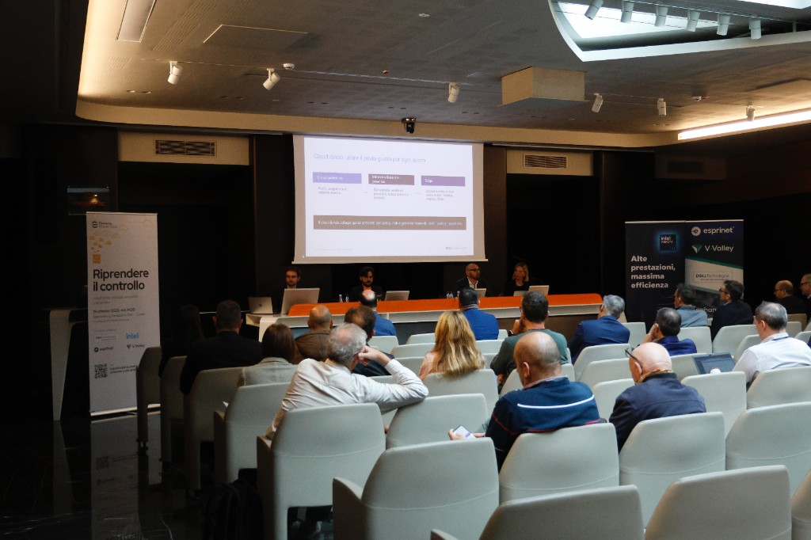

Riprendere il controllo. Guarda l’evento o leggi la trascrizione
Registrazione, galleria e trascrizione dell’evento Riprendere il controllo: cloud ibrido, sovranità dei dati e AI privata.

Puoi rivivere l’evento ‘Riprendere il controllo’ guardando la registrazione della diretta qui sotto o su LinkedIn e YouTube. Un’occasione per recuperare tutti gli interventi e le demo su cloud ibrido, sovranità dei dati e AI privata.
Se preferisci la lettura, trovi qui di seguito la trascrizione completa dell’intera live.
Gabriele Fronzé - Elemento Modular Cloud: In realtà l'attualità ci ha un pochino cambiato il modo di approcciarsi a questo, perché a volte i prezzi cambiano, a volte cambiano le condizioni, a volte cambiano i contratti, a volte il nostro distributore di fiducia o il nostro reseller di fiducia non riesce più a venderci il prodotto a cui eravamo abituati, perché il produttore ha deciso diversamente. E quindi questo è il primo approccio che vi voglio rappresentare rispetto a quello che facciamo in Elemento.
Le infrastrutture cambiano, le tecnologie cambiano, ma il controllo deve sempre rimanere nelle mani di chi effettivamente lo fa. I server, anche quelli on-prem, anche quelli che non sono in cloud, anche quelli che non sono dietro un abbonamento, possono cambiare e cambiare tanto. Non cambia veramente il server, oddio, il server progredisce tecnologicamente e poi con Intel vedremo delle cose molto interessanti su questo e ovviamente anche con Dell. Ma cambiano anche le licenze dei software che ci mettiamo sopra quei server.
Nel senso, nel momento in cui VMware nel 2023 è stata acquisita da Broadcom, e penso che... Alzi la mano chi non ha mai sentito questa storia. Anche a testimonianza di chi ci segue da remoto, non c'è nessuno con la mano alzata. VMware è stata acquisita da una grossa azienda, Broadcom, famosa per acquisizioni veramente parecchio importanti, e ha iniziato a fare fino a 15x sui prezzi. 15x sui prezzi vuol dire passare da 100 euro all'anno o 100 euro al mese, o da 100 a 1.500. Rendiamoci un attimo conto dello scatto che può essere questa cosa.
Vuol dire trasformare il software in un qualcosa che ha un prezzo marginale o comunque basso rispetto a quello che è il prezzo dell'hardware a qualcosa che inizia a costare ogni anno come praticamente tutto l'hardware. In alcune situazioni, ovviamente, dipende un pochino dalla conformazione.
Informazione. Riuscire quindi a far fronte a delle modifiche del genere è qualcosa che il futuro del cloud, il futuro della virtualizzazione... Mi sentirete molto spesso spostarmi da virtualizzazione a cloud perché per noi la virtualizzazione su server privati di fatto è un cloud privato, quindi non possiamo più permetterci di considerare le due tecnologie diverse.
Bene, questi cambiamenti devono essere per forza delle cose che all'interno delle nostre aziende impariamo a riassorbire. O che potenzialmente, per dirlo in altri termini, riusciamo a nascondere, per esempio, dietro un'interfaccia unificata, che sappiamo che ha un costo sensato, che mi posso permettere, e che mi permette potenzialmente di sostituire completamente la tecnologia retrostante senza cambiare i processi che nella mia azienda ho strutturato, per esempio per creare una nuova macchina virtuale o un database, o per creare un utente a uno dei miei collaboratori.
Questo è un esempio molto concreto, quello che vi facevo su Broadcom, perché parla di hardware, perché parla di licenze software installate sull'hardware all'interno delle nostre aziende, ma la stessa cosa si estende anche al cloud. Quindi anche il cloud che dice: «Va bene, non facciamo...
Smettetela di fare gli investimenti iniziali, smettetela di comprare centinaia di migliaia o decine di migliaia di euro di server da installare nella vostra casa, ma decidete di spendere 200, 300, 500 euro al mese o 500.000 euro al mese in cloud, perché quello è un abbonamento, tutti gestiscono tutto, non ti devi più preoccupare di niente, non hai la manutenzione».
Sì, però se improvvisamente quei costi passano da un centesimo al gigabyte di traffico a due centesimi al gigabyte di traffico, sembra marginale. Però magari per un'azienda vuol dire aumentare di mezzo milione di euro all'anno la spesa per il cloud. Stiamo parlando di dimensioni che vanno in questa direzione. E sempre di più i cloud provider moderni, i cloud provider anche quelli più etici, oserei dire, si sono messi in una condizione in cui rendono estremamente difficile passare da un provider all'altro.
La scorsa settimana sentivo una notizia, leggevo in realtà, una notizia estremamente interessante.
I cloud providers stanno capendo che in realtà aprire dei canali di comunicazione tra grandi cloud provider, e i più grandi, lo dico così ci togliamo un pochino il sassolino, sono Amazon Web Services, Google Cloud e Microsoft Azure, sono i più grandi a livello internazionale, vengono anche chiamati hyperscaler, e sono proprio quei tre, questi provider hanno capito che in realtà aprire un canale di comunicazione tra di loro in maniera tale da poter spostare carichi di lavoro è qualcosa di estremamente importante.
Piccolo problema, notizie della scorsa settimana: se non sbaglio Microsoft e Amazon hanno un canale di comunicazione tra alcune region, ma su questo canale di comunicazione non danno un SLA. Chi sa che cos'è un SLA? Gli ‘infrastrutturisti’ lo sanno. No, SLA vuol dire Service Level Agreement, cioè la percentuale di tempo entro un anno, entro una certa base temporale, una certa base temporale, grazie mille, una certa base temporale, la percentuale di uptime garantito.
Cioè, rivediamo un attimo il concetto. I provider stanno dicendo: «Sì, io per essere un pochino più... per farmi un pochino più bello agli occhi del cliente, apro dei connettori verso i miei competitor». Bello, bellissimo. Però su quelli non vi do certezza di uptime, potrei tirarlo giù in qualsiasi momento. E quando lo tiro giù, torni a pagare quei prezzi di comunicazione che vedete nella grafica. Questa è una cosa estremamente grave e questo è un ulteriore modo per dire: nessuna infrastruttura è per sempre.
Dobbiamo iniziare a ragionare sapendo che le infrastrutture devono poter essere intercambiabili e serve qualcosa sopra, qualcosa che permetta di cambiare queste infrastrutture rapidamente. Ovviamente questo è un problema, una situazione, un comportamento che si verifica volenti o nolenti. Immaginiamo: ci sono alcune persone qua in sala che lavorano nella propria azienda da tantissimo tempo, hanno fatto carriera all'interno della propria azienda e fondamentalmente l'infrastruttura della propria azienda è diventata quasi come un figlio.
No, però sì. E all'interno di quelle scelte ci sono, all'interno di quelle infrastrutture ci sono delle stratificazioni tecnologiche naturali, perché magari sono 30 anni che lavoriamo sulle infrastrutture e quindi abbiamo delle cose un pochino più legacy, un pochino più, non obsolete, ma fatte con un approccio un pochino più precedente e delle sciccherie nuovissime con tecnologie molto moderne. E questo può essere anche all'interno di un'unica azienda con un unico gruppo di persone che lo segue da 30 anni.
Immaginate che cosa succede quando le aziende iniziano a fare M&A, quindi acquisizione di altre aziende più piccole o più grandi, per cercare di crescere, di crescere dal punto di vista di gruppo. Ogni azienda potenzialmente porta in dote una tecnologia, un'infrastruttura diversa.
Allora diventa un pandemonio questa cosa. E quindi se nel 2018, o in realtà grazie a tutto il lavoro che ha fatto VMware, che effettivamente ha sdoganato la virtualizzazione dell'ambiente enterprise, una volta era un applicativo, un server, poi è diventato un server, tanti applicativi, e questo bisogna ringraziare VMware.
Se nel 2018 la frontiera era virtualizzare tutto, nel 2020 non era più solamente quello, era magari pensare al cloud, al cloud quando costava veramente poco. Poi magari nel 2023, in questo esempio attraverso il quale vi voglio guidare, c'è l'acquisizione di qualche altra azienda, qualche altra azienda che ha una tecnologia diversa, magari un altro virtualizzatore, magari un altro cloud.
E poi nel 2026 arriva il grande elefante nella stanza, c'è qualcuno che diceva questa cosa, o che continua a dirla magari, però nel 2026 arriva l'elefante nella stanza che è l'intelligenza artificiale.
L'intelligenza artificiale non è ChatGPT, cioè sì, è una delle declinazioni, ma l'intelligenza artificiale per le aziende, per le aziende moderne, per le aziende consapevoli di che cosa vuol dire l'intelligenza artificiale, vuol dire prima di tutto chiedersi dove gira. Gira sul mio portatile? Gira su dei server? Utilizza delle schede video o degli acceleratori specifici? La compro in abbonamento? Mi fido del fatto che quell'intelligenza artificiale possa e debba accedere a tutti i miei dati ma lascio che sia in cloud?
Eh, queste sono tutte delle domande assolutamente legittime. La grande scommessa che abbiamo fatto con Elemento nel 2021, e nel 2021 non c'era nessuno che lo faceva e possiamo dire di essere stati primi a farlo, è stato dire: va bene, però posto che il cloud è una cosa che usiamo e useremo perché è stata una rivoluzione e continua ad esserlo e continua ad essere la frontiera, posto che la virtualizzazione probabilmente continueremo ad utilizzarla, nel senso un mondo senza virtualizzatori probabilmente non ci sarà più.
Magari il virtualizzatore diventa sempre più nascosto, sempre più una cosa da infrastrutturisti che alzano la mano quando si parla di SLA. Però un mondo in cui è necessaria ed opportuna un'unificazione che ci permetta di dire: se per caso domani io devo cambiare tecnologia perché il virtualizzatore mi ha fatto 15x sui costi, devo poterlo fare rapidamente. E quel mondo è quello che abbiamo veicolato attraverso Electros in questi anni e che oggi vi presenteremo ancora più nel dettaglio.
Quindi la prima efficienza è riuscire a monitorare tutto quello che abbiamo, avere una visibilità condivisa, avere la possibilità di stabilire dei processi che non cambiano e che non bisogna modificare nel tempo e poter ogni volta cambiare la tecnologia sulla base delle esigenze immediate, perché la tecnologia deve soddisfare i requisiti nell'immediato.
Quindi la soluzione giusta dipende sempre dai task, non dall'abitudine. E quindi magari nella nostra azienda vogliamo avere un gestionale che è consolidato, che non vogliamo toccare, che continuerà a girare su VMware, ma magari un nuovo ambiente o il prossimo ambiente che utilizzeremo per la produzione scegliamo AtomOS, un altro dei prodotti di cui vi parleremo oggi.
Per qualcosa continueremo ad usare il cloud, magari per far fronte a quel picco di utenti che sul nostro marketplace arriva durante il Black Friday, sto facendo delle ipotesi. E magari per l'archiviazione, la disaster recovery, i backup, abbiamo bisogno di storage in cloud. Insomma, ogni task ha bisogno della tecnologia giusta, e avere qualcosa che davanti riesce a fare un'unica interfaccia, un unico modo di utilizzare tutto, è assolutamente fondamentale. Quindi il mio messaggio è che le infrastrutture cambiano, però il controllo deve sempre restare.
Bisogna mantenere aperta la possibilità di scegliere soluzioni sovrane, non sovraniste, bisogna mantenere aperta la possibilità di scegliere delle alternative, di cambiare fornitore, di andare dove il mercato ci porta o dove la tecnologia ci porta. E questo è quello che facciamo in Elemento giusto da qualche anno, lo facciamo con un team di matti in varie maglie gialle che vedete anche qua in sala oggi, e quindi, insomma, oggi ne vedremo delle belle. Grazie mille.
Qui trovi un video con una galleria di foto dell'evento.
Stefano Galfré - Elemento Modular Cloud: Grazie mille, Gabriele. Direi che siamo partiti settando con il metacloud l'asticella piuttosto in alto per i prossimi interventi che verranno. Ora passerei insieme ad alcuni nostri partner al perché, al come, e parleremo di infrastruttura, di cloud ibrido e di intelligenza artificiale, soprattutto l'intelligenza artificiale on-premise, con due ospiti che siamo davvero contenti e felici di avere qui con noi. Il primo è Giacomo Ragionieri, che è Server e Networking Distribution Account Manager di Dell Technologies.
Fino a mercoledì. Da mercoledì avrà un upgrade di questo titolo che però non mi è ancora stato comunicato, quindi. Giacomo arriva dalla Toscana, lo ringrazio doppiamente intanto per il viaggio, per essere venuto fin qui, ma soprattutto perché è stata una tra le persone che per prime hanno iniziato a credere nel potenziale di Elemento, quindi grazie, Giacomo. Chi era con noi al keynote dello scorso anno, al grattacielo di Intesa Sanpaolo, probabilmente se lo ricorderà.
Giacomo segue da vicino l'evoluzione delle infrastrutture e soprattutto le sfide legate sia ai costi dell'hardware, che come ben sapete, alcuni di voi sapranno, stanno crescendo non poco, ma soprattutto sta seguendo da vicino lo sviluppo e la creazione di un ecosistema di startup dedicato all'AI proprio in Italia, soprattutto all'AI privata insieme a Dell Technologies. Un ecosistema che ritroverete e ritroveremo al Dell Technologies Forum del 12 novembre a Milano, dove saremo presenti anche noi all'interno di questo ecosistema.
Con lui c'è Erika Tinto, Senior Business Developer di V-Valley, il distributore a valore aggiunto del gruppo Esprinet, realtà di primo piano in Italia e nella penisola iberica. Ringraziamo V-Valley in prima persona e tutto il team presente qui con noi oggi per aver accolto AtomOS, il nostro hypervisor, nel proprio catalogo e per accompagnarci nello sviluppo di quello che è il canale distributivo dei nostri prodotti.
Insieme ci aiuteranno a capire quali strategie possono adottare oggi le aziende tra cloud ibrido e AI on-premise, perché sceglierle e soprattutto come metterle in pratica. Vi chiedo un caloroso applauso a Giacomo Ragionieri e Erika Tinto. A voi la parola.
Giacomo Ragionieri - Dell Technologies: Grazie mille. Fondamentalmente è una scelta, perché poi il cloud impatta anche quello che è il mondo dell'intelligenza artificiale. Noi oggi parliamo di cloud e neocloud. Sta nascendo un mercato del neocloud, che poi è il mercato dei token, dell'AI come servizio. Quindi fondamentalmente l'obiettivo è sempre più capire dove determinate informazioni devono girare all'interno dell'azienda, a seconda di quello che è necessario.
E il problema quindi non è il cloud, fondamentalmente, ma è, come diceva giustamente Gabriele, dove mettiamo i dati.
Noi sempre più sentiamo parlare di sovranità del dato. Sapete cosa vuol dire la sovranità del dato? Sapete qual è la situazione geopolitica in questo momento? Sapete anche che i nomi che ha fatto prima Gabriele non sono europei, quindi comunque avere sovranità del dato è un'argomentazione importante. Poi c'è il costo.
Ora Gabriele prima ha fatto vedere una mappa temporale: nel 2000X arriva il cloud. Io ricordo i tempi del cloud in cui: «Ma voi vendete infrastruttura, noi andiamo tutti in cloud e spendiamo meno». Poi siamo arrivati in una fase che hanno chiamato repatriation. Perché? Perché clienti arrivavano e dicevano: «Ma in due anni ho speso quanto comprare un data center e mezzo». Questo perché? Perché non c'è controllo, cioè tu non sai quanto vai a sfruttare di traffico quando utilizzi cloud.
E questo oggi con l'intelligenza artificiale è ancora più complesso. Non so se avete sentito parlare della token economy, che per un toscano tutte queste K è una tragedia, ok? Però non so se avete sentito parlare di quella che è la token economy. Ci sono esempi lampanti, no? Amazon licenzia 20.000 persone perché sostituite dalle AI, dopo quattro mesi finito il budget Amazon per l'AI riassume 10.000 persone. Questo è il take-home: noi non sappiamo quanti token usiamo quando usiamo l'intelligenza artificiale.
Non lo sanno le aziende. Oltre a parlare con intelligenza artificiale che magari non parla la tua lingua, voi sapete quanto è la misura di un token? Una parola quanti token pesa? Ogni parola è 0,75 token mediamente, quindi nel momento in cui tu hai scritto «Ciao, come stai?», hai già speso qualche token. Pensate se uno crea degli agenti che lavorano H24, che analizza file Excel e quant'altro e questo continua a leggere informazioni: voi arrivate che avete speso 200.000 euro in un mese per analizzare file Excel.
Cosa che poi invece uno può fare in on-premise. Quindi oggi ci troviamo con una realtà che ha il cloud pubblico, che ancora esiste, la parte di infrastruttura on-premise e poi l'edge. Perché l'edge? Perché sempre di più, anche con l'avvento dell'intelligenza artificiale, determinate decisioni devono essere prese in prossimità di dove quell'informazione viene rilevata. Quindi il cloud può essere interessante all'inizio per fare un test, per fare un POC, perché no?
Anzi, a volte è fondamentale, no? Perché è veloce, ci permette di partire, fare un test, ma non deve essere la destinazione finale. Invece quando lavoriamo sulla parte on-premise, lì lavoriamo su dati sensibili. Considerate che l'AI funziona se gli date le informazioni. Più dati gli dai, meglio funziona.
Ma dare dati vuol dire dare brevetti, dare informazioni magari che in azienda sono in NDA? Queste sono le informazioni di cui ha bisogno l'intelligenza artificiale e noi la stiamo mettendo magari su un cloud dove ti dicono: «Non verrà utilizzata per essere addestrata l'intelligenza artificiale», però non ti dicono che quei dati rimangono in un database dai 3 ai 5 anni.
E sono i vostri dati, tante volte, o i dati dei vostri clienti. E poi c'è un altro aspetto fondamentale: che nel momento in cui andiamo a lavorare su queste infrastrutture esterne lavoriamo con delle intelligenze artificiali che sono addestrate con Wikipedia, con i libri, con internet, non con, diciamo, il linguaggio della vostra azienda, che è completamente diverso.
Io faccio sempre un esempio molto banale: ma se sei un'azienda che fa perforazione a basse profondità per l'estrazione di carburanti e chiedi a luglio, che devi consegnare una gara, un progetto albero di Natale e ti arriva l'abete con le palline, e ti girano anche le scatole, che dici: «30 gradi, non rispondo alla gara, voglio andare in mare e questo mi dà l'albero con le palline».
Probabilmente se la fai lavorare on-premise sui tuoi shared folder con i tuoi dati ti tira invece un progetto tecnico che è quello di perforazione chiamata albero di Natale per gli sfiati laterali. Quindi questo vuol dire avere una soluzione on-premise o lavorare su soluzioni cloud. E poi, come dicevo, c'è l'edge perché sempre più prenderemo... ci saranno necessità di prendere decisioni, soprattutto con l'avvento dell'AI agentica all'interno dell'azienda. Non vediamo l'AI solo come ChatGPT.
L'AI non è il Q&A, cioè non è il chatbot e basta. L'AI è anche lo strumento di reti neurali che lavora a bordo macchina in produzione, che permette di ridurre lo scarto in produzione del 20%, prendendo decisioni, bloccando le macchine, settando le attività. Però anche questo va controllato, va gestito, perché altrimenti, come è successo l'altro giorno, ho letto una notizia che ChatGPT ha comprato il biglietto aereo a una persona che aveva chiesto come fare un viaggio con la sua carta di credito.
Così, ha deciso che andava bene. Quindi il cloud o il neocloud o l'intelligenza artificiale hanno una necessità che è quella di stare nel posto giusto per quello che è il progetto che stai portando, per quella che è la maturità del progetto che stai portando avanti. Quindi, parlando poi di cloud ibrido nella sua accezione, cosa vuol dire cloud ibrido?
Vuol dire avere un sistema di orchestrazione che ti permette, e loro ne sanno qualcosa, dico bene, di avere un sistema di orchestrazione che ti permette di gestire i carichi di lavoro, di gestire le informazioni che tu hai tra quello che vuoi tenere verso l'esterno e quello che vuoi tenere a prossimità.
Questo anche perché poi il mercato dell'IT sta cambiando, cioè il mercato sta cambiando: non più tutti i carichi di lavoro sono standard basati sulle CPU o solamente sullo storage, c'è solo un tipo di storage. Ad oggi abbiamo necessità diverse anche a livello di performance, archiviazione, a seconda di quello che andiamo a fare. Cioè la complessità dell'IT fine a se stessa in ambito tecnologico è cambiata. Soprattutto quando lavoriamo on-premise c'è l'infrastruttura.
Noi siamo un'azienda che vende ferro, quindi noi come Dell Technologies fondamentalmente produciamo e vendiamo ferro, ma sempre meno io parlo di ferro. Però c'è sotto. Quando poi andiamo a parlare di intelligenza artificiale parliamo di use case, parliamo di ritorno di investimento, parliamo di tantissime cose, ma tutto questo gira su un'infrastruttura. Un'infrastruttura che parte dalla componente server, quindi quelli che sono i nostri PowerEdge, l'infrastruttura fondamentalmente storage, ma anche il mondo dello storage è cambiato.
Fino all'altro giorno, fino ad un anno fa, parlavamo tantissimo di primary storage, la SAN, il backup. Oggi quando parliamo di intelligenza artificiale parliamo di dati destrutturati. Quindi dobbiamo cominciare a parlare di object storage che è completamente diverso. Prima era dedicato a chi faceva RIS e PACS nell'archiviazione fondamentalmente della sanità, delle immagini di grandi formati, oppure chi faceva broadcasting per l'archiviazione dei filmati video.
Oggi la parte di object storage non è più per quei mercati, cioè un'azienda enterprise o anche SMB, se vuol creare il suo data lake, dare in pasto dei dati strutturati all'intelligenza artificiale, non deve più parlare di primary ma deve parlare di object storage.
La parte di connettività è sempre più importante perché comunque nel momento in cui noi scaliamo in termini di nodi e dobbiamo lavorare come fondamentalmente interconnessione tra i sistemi, con queste macchine che generano tantissime informazioni, analizzano tantissime informazioni molto velocemente e devono essere interconnesse tra di loro allo stesso modo molto velocemente, altrimenti la rete diventa un grandissimo collo di bottiglia.
E poi c'è la parte di backup. Perché è ancora importante la parte di backup? Perché backup lo dico bene in toscano, però, che mi risento con il microfono, ed è top. Perché è più importante la parte di backup all'interno dell'azienda? Perché comunque l'intelligenza artificiale è un vantaggio per le aziende, non ancora percepito in Italia di quanto è un vantaggio economico, ma però crea nuove superfici di attacco, fondamentalmente, perché tu inserisci un nuovo layer all'interno del data center.
Dall'altra parte i cosiddetti cattivoni che attaccano l'intelligenza artificiale già la usano per andare ad attaccare. Quindi avere poi dei sistemi di protezione di cyber resiliency, non solo di resilienza del dato in termini di backup, però avere una visione olistica di quella che è la cybersecurity, anche con l'avvento dell'intelligenza artificiale, diventa fondamentale. Che tu l'abbia in casa o che tu non la voglia subire dall'esterno. Perché dall'esterno fondamentalmente la utilizzano già da più di un anno e mezzo in maniera molto strutturata.
Questo cambiamento ha portato un po' a quello che possiamo dire un invecchiamento di quelli che erano i sistemi di iperconvergenza. Perché un invecchiamento di quelli che erano i sistemi di iperconvergenza? Il sistema di iperconvergenza come funziona? Lo sapete? Tu hai nodi che hanno calcolo e archivio, per spiegarla semplice, poi ci ho fatto il disegnino, ok? Ma se tu devi crescere, cresci con calcolo e archivio. Cioè tu non puoi crescere solo in prestazioni, in termini di performance, o solo in spazio disco o IOPS, quindi velocità e quant'altro.
E qui si torna un po' al discorso fondamentalmente che dicevo prima. Però l'IT sta cambiando perché se ho bisogno di fare intelligenza artificiale ho bisogno magari di grandissima potenza di calcolo e ho bisogno di uno storage che abbia una concezione diversa da quella che è lo standard.
Oppure magari devo dare storage ad altissime performance ma la parte computazionale deve essere contenuta, perché quello che mi interessa è un accesso veloce ai dati. Quindi stiamo tornando, perché poi comunque l'IT è come le mode, ogni tot anni si ritorna a un punto, stiamo tornando a quelle che chiamano l'architettura disaggregata, classico three-tier, no?
Compute, server, networking, storage, sempre più con sistemi di orchestrazione che però permettono di gestirla come se fosse un'iperconvergenza. Perché poi quello che importa è la gestione. Però in questo modo le aziende cosa possono fare? Possono crescere solo dove gli serve. Ti serve compute? Cresci sul compute. Ti serve la parte storage? Cresci sulla parte storage. Quindi c'è un bilanciamento della crescita più adeguato a quelle che sono le sfide che l'IT ci metterà davanti.
Perché l'AI on-premise? E qui poi entro nel mio mantra. Allora, partiamo da un presupposto. L'AI è una rivoluzione industriale. Volenti o nolenti siamo in una rivoluzione industriale. Quindi come quando è arrivata l'elettricità ha portato al cambiamento del lavoro e chi prima andava a lavorare con le macchine in serie aveva un vantaggio competitivo in confronto agli altri, poi è arrivata la rivoluzione digitale e adesso siamo nella rivoluzione dell'intelligenza artificiale.
Il problema dell'intelligenza artificiale è che, essendo legata al mondo dell'IT, ancora tante aziende lo vedono come un costo. Devo comprare un server con le GPU o senza, se faccio inferenza in CPU, però devo comprare un server, è un costo. E questo è sbagliato. Nel momento in cui andiamo a comprare l'intelligenza artificiale, noi non compriamo un server o uno storage, noi compriamo uno use case.
Compriamo uno use case che ha un ritorno di investimento. Quindi va visto come il tornio che l'azienda compra per produrre più componenti, semplicemente che quei componenti è produttività o un minore scarto.
Però l'intelligenza artificiale non è un costo dell'IT, è un investimento per l'azienda che va analizzato insieme ai partner, insieme a Dell Technologies e quant'altro, che stima un payback, che dà un ritorno di investimento e poi un guadagno. Nel momento in cui cominceremo a vedere l'intelligenza artificiale on-premise, perché a quel punto è prevedibile quanto pagherai perché tu non stai comprando token e quindi non prevedi il costo che hai, non sei l'incubo di un CFO nel momento in cui vai a fare un investimento on-premise.
Quindi non solo hai la sovranità del dato, non solo hai un'AI che parla la tua lingua, ma hai anche un ritorno di investimento se hai un tasso di adozione all'interno dell'azienda che è adeguato a quelle che sono le esigenze. Quindi l'intelligenza artificiale oggi, e spero che in Italia questa cosa arrivi, perché a livello europeo sta già arrivando, quello che si chiama il mercato dell'inferenza, è un investimento, non è un costo. E io questo non smetterò mai, mai di ripeterlo, perché poi chi la utilizza, e io lo vedo, noi siamo il paziente zero, produce di più.
Noi abbiamo il nostro sistema di intelligenza artificiale interno, io ho stimato, dopo un annetto adesso che lo utilizzo, io ho ottimizzato la mia giornata del 25%. Ottimizzare la mia giornata del 25% vuol dire o fare in quel tempo delle chiamate in più per provare a chiudere degli ordini, per quelli mi pagano, o poter smettere alle 18 e andare a vedere gli allenamenti del bambino, invece di farci le 20 la sera per fare lo stesso lavoro. Questa è l'ottimizzazione che l'AI mi ha permesso.
Va usata con criterio? Sì. Dobbiamo sapere cos'è la governance, i guardrail e quant'altro? Sì. Però lì ci sono i partner che poi vi affiancano, ci siamo noi che vi affianchiamo. Come dicevo, però, questo porta alla necessità di essere sovrani del nostro dato, perché comunque l'AI per funzionare ha bisogno di dati costanti, puliti.
Garbage out. Vanno sanificati questi dati, vanno digitalizzati questi dati. Tante volte parliamo con aziende che dicono: «Sì, noi vogliamo fare l'intelligenza artificiale, però i documenti che ci servono, come le schede tecniche, sono in quel faldone, in quell'archivio di carta».
Non è che l'intelligenza artificiale è il robottino che va, te la prende, te la legge e ti dice: «Guarda, questa è l'informazione». C'è da fare un lavoro, ma è un lavoro che si può fare. Sono strumenti che permettono di fare digitalizzazione e ingestion con la qualificazione e quant'altro. Ma poi la parte importante è che quei dati rimangono in casa, perché nel momento in cui li mandiamo verso l'esterno il rischio che quel dato non sia vostro può succedere.
Su questo lancio anche un po' una sfida da un punto di vista di provare a pensare perché diventa un rischio, e questo faccio sempre riferimento ad aziende come quella di Gabriele, no? Voi scrivete codice. Nel momento in cui tu vai a scrivere il codice della vita perché inventi la soluzione software che ti fa diventare multimiliardario, ma lo scrivi con ChatGPT, quel software di chi è? In percentuale non è tuo, e di là c'è magari degli avvocati a livello di studi che forse sono un po' più grandi di quelli che potrebbe avere Gabriele.
Quindi ci sono delle domande che ci dobbiamo fare. Se tu progetti un prodotto proprietario utilizzando un sistema di intelligenza artificiale pubblico o comunque anche in abbonamento esterno a te stesso, di chi è quell'idea? Quindi ci sono delle domande che dobbiamo farci sulla sovranità del dato che vanno ad avvalorare sempre di più l'on-premise. E poi, ripeto, l'on-premise non è solo sovranità, è anche prevedibilità dei costi. Voi non sapete, se usate l'intelligenza artificiale, io credo che a chiunque di voi chiedo quanti token avete utilizzato e non lo sapete.
E questo vi posso garantire che è il più grande problema che l'AI, diciamo cloud, neocloud, ha. Per partire con l'AI l'importante è partire con i workload di tutti i giorni. Vediamo dove fondamentalmente c'è un risultato. Io ho fatto un esempio l'altro giorno, su cui faccio delle sessioni di formazione sull'AI, dicendo: «Ma se tu hai 50 tecnici e questi risparmiano a testa 15 minuti al giorno a cercare informazioni, in fondo all'anno quanto hai risparmiato?».
Per quanto si può costare un tecnico vengono centinaia di migliaia di euro all'anno. Quindi nelle aziende vanno capiti dove sono questi lag, perché poi magari il tuo competitor fa questa analisi, diventa più, più veloce, diminuisce il tempo di risposta, va a prenderti il contratto perché tu a quel punto rispondi più lento e quindi ti passa avanti e quindi sei meno competitivo.
Vanno definiti sicuramente i guardrail e quant'altro, le governance, evitare le allucinazioni, evitare intelligenze artificiali sovraniste o razziste, perché succede anche questo se non impostiamo determinati guardrail.
Soprattutto in sanità negli Stati Uniti sono stati fatti dei disastri con la valutazione assicurativa delle persone o comunque nei paesi asiatici con il social scoring, dove addirittura a un certo punto le banche non aprivano con riconoscimento facciale ad alcune persone perché considerate povere, quindi a rischio rapina.
Quindi queste cose non si possono fare, almeno da noi, fortunatamente che abbiamo l'AI Act e tutti i parametri da rispettare. Una volta fatto questo va definita un'infrastruttura la più adeguata, cioè l'AI non gira solo su grandissime infrastrutture, può girare su un laptop, può girare su una workstation, può girare su un server senza GPU facendo un'inferenza in CPU con le piattaforme di Intel, può girare su infrastrutture poi che hanno bisogno di GPU e si va a salire.
Però non è detto che sia un investimento infinitesimale da un punto di vista economico e a quel punto si passa da un POC, quando si vede il risultato, a metterlo in produzione. Quindi, e poi ho finito, sono nei tempi?
Perfetto, perché io poi quando parlo di queste cose potrei andare avanti ad ore. Quindi fondamentalmente la domanda che ci dobbiamo sempre fare non è il cloud, on-premise, non on-premise, quello che va capito è: che ci devo fare, dove lo devo fare, qual è la cosa che voglio risolvere all'interno dell'azienda o dal mio cliente, che controllo voglio? Una pubblicità diceva «La potenza è niente senza il controllo», però è vero, che controllo voglio sui miei dati e quant'altro?
E poi penso di crescere. Quando parliamo di intelligenza artificiale anche questa è una domanda importante perché tu parti da uno use case, però poi se quello funziona ed altri dipartimenti ne vogliono implementare altri perché hai un'ottimizzazione a quel punto che va a scalare, quindi anche queste sono valutazioni che vanno fatte perché altrimenti tu non sai da dove parti e non sai dove arrivi. In Toscana si dice: «Si parte con un conto e si finisce con un contadino», quindi è abbastanza esplicativa.
Ecco, questo sull'AI, se non viene fatta correttamente, se non viene fatta magari cominciando a capire che l'on-premise è una soluzione, che la parte di gestione è ibrida anche dell'AI con le API e quant'altro, il futuro potrebbe creare dei problemi. E con questo io passo la parola a Erika.
Erika Tinto - V-Valley: Buongiorno a tutti. Ringrazio anch'io Stefano e Gabriele per averci dato l'opportunità di parlare. Io nel merito vorrei rubarvi veramente pochissimo tempo per parlare della mia azienda e un po' della nostra collaborazione con Elemento e Dell Technologies. Io lavoro per V-Valley, un'azienda del gruppo Esprinet. Esprinet è un distributore che nel 2025 ha superato i 4,3 miliardi di euro, siamo 1.800 dipendenti, 30.000 clienti attivi e 850 brand a catalogo. V-Valley invece è l'azienda del gruppo che si occupa delle Advanced Solutions.
L'azienda si sta evolvendo, il gruppo Esprinet, non stiamo uscendo un po' dal modello del distributore tradizionale. Continueremo a vendere tecnologia, però vogliamo e ci stiamo spingendo sempre di più verso soluzioni e servizi a valore aggiunto. È per questo che è stata creata all'interno anche della nostra azienda Innovexya, proprio una società dedicata ai servizi.
E con l'avvento di Elemento, che grazie a Dell Technologies nella figura di Giacomo poi ci è stato presentato, siamo riusciti a fare anche con loro questo progetto, quindi di dare soluzioni e non più solo ferro.
Stiamo lavorando per fare in modo di far uscire ogni server Dell con una trial di Elemento, in modo di dare la possibilità a tutti di scoprire la grandezza di questa cosa che abbiamo. Non lasceremo da soli né i partner né gli utenti finali perché legati a questo progetto ci sarà ovviamente tutto il supporto, l'enablement, lo sviluppo che faremo tutti insieme.
Quindi questo progetto della distribuzione di uscire dalla vendita solo dei prodotti di ferro, diciamo, e di software sarà unito appunto dalle vendite delle soluzioni. E con Elemento e Dell Technologies stiamo facendo un ottimo lavoro. Se avete domande, grazie.
Stefano Galfré - Elemento Modular Cloud: Grazie davvero. Grazie, Giacomo, grazie, Erika, per la chiarezza e per la profondità con cui avete affrontato questi temi che talvolta in azienda possono restare un po' dietro le quinte ma che in realtà sono fondamentali per qualunque azienda. È sicuramente molto interessante. Io dal canto mio passerei un attimo alla prova dei fatti, a vedere qualcosa di più concreto.
Giacomo, ti chiederei di rimanere con noi insieme a Gabriele, in quanto faremo una dimostrazione dal vivo, una demo, delle tecnologie di Elemento al di sopra di un server Dell Technologies, del bundle di cui anche Erika ha appena parlato.
Il connubio delle due tecnologie ci piace particolarmente. Da un lato un hardware di livello enterprise, di primissimo livello, e dall'altro il nostro software, pensato per renderlo più flessibile, più semplice da usare e capace di generare un valore concreto.
Ricordo anche, come menzionava appunto Erika, che queste soluzioni possono essere acquistate in bundle attraverso il distributore V-Valley, attraverso appunto il canale, e che da pochissimo, grazie al nostro team marketing, è disponibile per quelli che sono i partner anche un'Academy su cui potersi formare, su cui andare ad apprendere come funzionano le nostre tecnologie, come utilizzarle, come portare valore ai propri clienti, o per gli utenti finali per capire quale può essere il valore che si può estrarre dalle loro soluzioni.
Un'Academy completamente gratuita che abbiamo messo a disposizione appunto per tutti coloro che potessero essere interessati. Colgo l'occasione per ringraziare oltre a Erika anche Alice, brand manager della BU Dell, e Simone Campagna del team pre-sales, del team sempre appunto di V-Valley, che sono qua con noi oggi, e mando un saluto anche a Giovanni, a Sara e a Manuela che ci seguono da remoto e che appunto da molti mesi ormai sostengono il nostro progetto e lo presentano a tutti i loro partner.
Bando alle mie ciance, lascerei di nuovo la palla a Giacomo e a Gabriele per farci vedere che cosa possiamo fare insieme. Grazie.
Gabriele Fronzé - Elemento Modular Cloud: Bene, allora, quello che abbiamo preparato per voi oggi è una simulazione, un simulacro di un cliente reale che, per ovvie ragioni, abbiamo tolto tutti i nomi del cliente reale, di un'infrastruttura che è completamente basata su server Dell, un po' particolare perché in realtà questi server Dell sono in un cloud provider. Quindi sono delle macchine bare metal, come se questo cliente le avesse in casa, ma sono server Dell con il loro service tag e tutto il resto, con processori Intel che stanno intorno a Parigi.
E quindi adesso vi racconterò qualcosina. Il bello di questa sessione, che a me affascina sempre molto, è il fatto che sarà interattiva, nel senso non saranno semplicemente delle pallosissime slide, spero non troppo pallosissime, però vi farò vedere adesso con mano anche Electros, quindi anche il nostro tool di orchestrazione, e andremo un pochino più nel dettaglio di questo. All'interno di questo esempio che vi facciamo vedere oggi, ci sarà anche un pezzettino di AI.
Quindi ci saranno dei server dedicati, Dell più Intel, ci saranno dei servizi gestiti nativi del provider, in particolare in questo esempio stiamo lavorando con Scaleway, che è un provider europeo, di cui forse sa qualcosa qualcuno qua in sala, ma che è un provider che di fatto è del gruppo Iliad, cioè la proprietà è il gruppo Free francese che in Italia si chiama Iliad per ragioni di sovrapposizione con l'operatore 3, quindi ha dovuto cambiare nome. In questo esempio quindi parleremo di cloud ibrido.
Un cloud ibrido che potrebbe essere tranquillamente con dei server fisicamente dentro un'azienda, in questo caso era la scelta del cliente di metterli comunque nel data center di un provider, quindi dei server però al 100% dedicati a quel cliente di cui quel cliente ha totale disponibilità.
Una combinazione anche con dei servizi gestiti dal provider. Esempio: il cliente non se la sente di essere responsabile del proprio database, preferisce prenderlo in abbonamento, farlo scalare più rapidamente, anche perché il database improvvisamente può diventare 5-6 volte più grande di quello che avevo prima con un semplice aggiornamento del software che mi aggiunge tante funzionalità.
Quindi questa può essere la situazione. L'importanza dei backup: i backup è abbastanza naturale farli in cloud e farli comunque off-site, e poi una spruzzata di AI. Qua spero che non vi disturbi questa grafica che abbiamo preparato, per raccontarvi un pochino che cos'è la situazione di cui il cliente, su cui è basato questo esempio, sta creando. Questo cliente è un cliente che crea dei gestionali per una certa industria particolarmente specifica e specializzata.
Quindi non sono dei gestionali generalisti, sono dei gestionali, in questo caso, basati su una tecnologia open source, profondamente personalizzata da questo cliente e nel caso ci stessero seguendo, penso che abbiano capito che sto parlando di loro. Questo cliente è partito da una situazione in cui era completamente in cloud, completamente pagamento, abbonamento, ma abbonamento pesante da servizio gestito.
Quello che noi abbiamo fatto nell'arco degli ultimi 12 mesi, perché praticamente questo cliente è passato da noi circa 12 mesi fa, è stato razionalizzare molto tutta la parte di deployment per cercare di razionalizzare i costi.
Quindi il cliente, che non aveva particolari policy di ridondanza, in questo caso è completamente ridondato. All'interno di questa grafica vedete che ci sono dei box che sono PAR1, PAR2 e PAR3. Scelta di questi tempi purtroppo discutibile metterli a Parigi, probabilmente, però comunque a Parigi abbiamo scelto tre data center, in tre cantoni, in tre arrondissement della città. Quindi questo provider ha la disponibilità di avere degli interi data center in più zone di Parigi, in realtà ne ha cinque su Parigi, noi abbiamo selezionato i tre.
Questi tre data center riescono a lavorare praticamente come se fossero lo stesso data center, perché tra di loro la connettività a cui facevi anche riferimento tu è molto, molto forte. Tutto il lavoro che ha fatto Elemento è quindi stato trasformare questi server da inutili pezzi di ferro, ma inutili no ovviamente, a utili pezzi di ferro, cioè in un cloud privato, installando AtomOS, cioè il prodotto che è in distribuzione presso Esprinet.
Fatta tutta questa configurazione, quello che noi abbiamo potuto garantire al cliente è dire: visto che davanti c'è un bilanciatore, questi tre server che sono in tre data center diversi, in caso di down del singolo server, del data center, o al limite anche di due server su tre, i servizi non muoiono, continuano a lavorare.
E questo è già un aspetto assolutamente importante. Ovviamente sappiamo che tutta la parte di networking di questo provider, in particolare il back-end di networking che stiamo gestendo noi, è basato su prodotti Dell, che non so se siano passati tramite te, ma è possibile, però vabbè. E la cosa fondamentale è che grazie alla combinazione di ferro Dell, quindi di server Dell, networking Dell, le prestazioni tra queste macchine sono veramente impressionanti.
Immaginate che normalmente noi all'interno delle case abbiamo dei contratti di connettività 1 gigabit, la connettività tra queste tre macchine che sono ai tre angoli di Parigi è di 25 gigabit. Questo significa che ai nostri clienti garantiamo anche una banda sufficiente a tenere totale sincronia tra questi server, quindi questo è un altro aspetto importante. Ovviamente tutti i gestionali hanno bisogno di un database e quel database forse è il punto più debole.
Ma non tanto il punto più debole in senso lato, il punto più debole se a gestirlo devono essere delle persone che hanno un orario, che non necessariamente fanno 24/7 di reperibilità, eccetera, eccetera, eccetera. Quindi dal punto di vista del database abbiamo deciso con questo cliente di trasferire il database in un prodotto gestito dal provider. Quindi il cliente ha smesso di dover gestire il proprio database, doverlo rincorrere, doverlo aggiornare. Quello che ha deciso di fare è di utilizzare un prodotto pronto del provider che viene automaticamente tenuto aggiornato.
In questa maniera abbiamo anche tolto dei costi interni del cliente, nel senso che quello non è semplicemente un costo di infrastruttura o tecnologico. È anche un costo di risorse umane, se ci pensate. Nel senso non devo avere delle persone che mi fanno i turni sul database perché so che c'è un provider che mi garantisce, qui sì, un SLA. E poi, se però tutto salta, se però quei server perdono connettività di internet tutti quanti insieme, se però il mio database non c'è più, che cosa succede?
Quel database è su un provider, se quel provider ha un problema grave e quel database diventa inaccessibile, io come faccio a continuare ad andare avanti? La risposta è stata ovviamente fare un backup di tutto quanto su un provider terzo. In questo caso un provider che si occupa semplicemente di spazio di archiviazione a oggetti e specializzazione. E poi c'è la parte di AI locale, ma a metà strada, cioè ancora su questa discussione. Quello che vi voglio raccontare e quello che vi voglio far vedere è come vediamo tutto questo all'interno della nostra applicazione.
Questa applicazione che vedete a schermo è Electros, è il nostro orchestratore. Spero che sia abbastanza zoomato, non posso zoomarlo più di tanto semplicemente perché poi diventa un pochino ingestibile come layout, però spero possiate apprezzare quello che si può vedere qua.
La cosa importantissima è che vi ho raccontato di server dedicati del cliente, di fatto di server privati del cliente, vi ho parlato anche del fatto che stiamo utilizzando risorse su Scaleway, quindi su un cloud provider pubblico.
La cosa importantissima è che il nostro cliente gestisce tutto quanto, tutti quanti i suoi ambienti, i suoi deployment, attraverso un'unica interfaccia. All'interno di questa interfaccia non voglio farvi vedere tutti i dettagli dell'interfaccia, ma voglio farvi apprezzare una cosa importante. Qui stiamo parlando per esempio di macchine virtuali come quelle che possiamo avere sui nostri server privati, gestibili e raggiungibili direttamente dall'interfaccia Electros, quindi dal prodotto di Elemento.
Queste sono delle macchine che in questo caso sono su AtomOS, sul nostro virtualizzatore, ma sono delle macchine che potrebbero essere su VMware, che potrebbero essere su Proxmox, anche perché all'interno di Electros abbiamo aggiunto e stiamo lavorando per aggiungere sempre di più compatibilità con virtualizzatori che sono nostri concorrenti. E non abbiamo paura di dirlo, ma di nuovo, permettere di cambiare tecnologia significa uniformare i processi, e lo stiamo facendo.
Questo, come vedete, è la macchina virtuale che fa girare l'intelligenza artificiale che poi vedremo un attimo e con cui interagiremo anche un pochino. Questa è una macchina virtuale che viene eseguita però su server dedicati, quindi non è un prodotto di intelligenza artificiale fornito da qualcuno fuori, come dicevi tu, Giacomo. Questo è un prodotto che gira su un server certificato, virtualizzato per ulteriore possibilità di fare disaster recovery e backup, però è un prodotto che è una risorsa su cui il nostro cliente ha totale controllo.
Se il cliente ha bisogno di inserire i dati personali di un utente finale che magari non è una partita IVA, quindi non è un business e quindi soggetto fortemente a GDPR, l'AI che gira su questa macchina può tranquillamente gestire quei dati. Non viola nessuna regolamentazione. Quindi il nostro cliente è passato da avere magari un gestionale un po' più all'antica ad avere la possibilità di aggiungere funzionalità di AI, pur mantenendo tale compliance, cosa che sarebbe stata molto difficile in altre situazioni.
Oltre a questo ci sono ovviamente le tre macchine, Parigi 1, Parigi 2 e Parigi 3, le tre che vi facevo vedere nello schemino di prima. Queste sono invece tre macchine virtuali.
Sono delle macchine virtuali su cui la gestione del dato personale è delicata e poi ne parleremo con Intel, nel senso che oggettivamente queste macchine virtuali, anche se Elemento non può assolutamente vedere che cosa gira sulle macchine del cliente, nel senso che noi abbiamo un meccanismo per cui c'è un fortissimo isolamento e una fortissima protezione, anche rispetto a noi che non ci interessa guardare che cosa fanno i nostri clienti sulle loro macchine, però potenzialmente potremmo farlo.
Noi abbiamo costruito tutta la tecnologia affinché questo non sia possibile, ma il provider potrebbe ancora guardarci dentro. E quindi poi parleremo anche di qualcos'altro con gli amici di Intel. Quindi qui vi ho fatto vedere due pezzi dello schemino di prima, vi ho fatto vedere la prima macchina che è quella che fa girare l'intelligenza artificiale, le tre macchine che stanno sopra. E fin qua stiamo solo parlando di macchine virtuali, sono macchine virtuali di due declinazioni diverse.
Però c'è dell'altro, c'è il database, c'è la parte di storage per i backup, per la disaster recovery. Tutto quanto questo, grazie al lavoro che abbiamo fatto in Elemento, è gestibile dalla stessa interfaccia. Il database lo vedete qua, ovviamente nella sezione database dell'orchestratore, e quindi il database il nostro cliente lo può gestire direttamente dalla stessa identica interfaccia senza dover spostare da una pagina del browser all'altra o da un'applicazione all'altra.
È tutto all'interno dello stesso oggetto, è tutto all'interno di Electros, è gestibile dall'interno di Electros. E la stessa cosa avrete capito per quanto riguarda lo storage ad oggetti, quindi i backup del database, i backup dei dati dell'intero applicativo. Tutto quanto questo è stato creato fondamentalmente in un paio di settimane di migrazione rispetto a quello che c'era sul provider precedente, è un lavoro che abbiamo fatto, come dicevo, nell'ultimo anno, negli ultimi 12 mesi, però è un lavoro che di tempo operativo di migrazione ha richiesto veramente poco.
E questa è una cosa su cui noi, attraverso dei servizi nostri gestiti, ma poi sempre di più in maniera sempre più automatica ed integrata all'interno dell'orchestratore, siamo in grado di offrire ai nostri clienti. Il punto fondamentale a questo punto è quindi dire che cosa succede e per quale motivo abbiamo scelto di avere tre server in giro per Parigi e non un server unico su cui mettere tutto, oppure non semplicemente una macchina virtuale su un cloud provider qualsiasi.
Di nuovo, per la ridondanza. È già successo, malgrado tutto, che il cloud provider per un errore di aggiornamento suo spegnesse uno di questi server. E su quello, nel momento in cui utilizzi delle risorse in cloud, non puoi farci molto. Quello può succedere. Può succedere anche perché dall'altra parte ci sono anche degli esseri umani che sbagliano, o peggio ancora, perché non sai con chi prendertela, delle AI che sbagliano. Perché quando l'AI sbaglia, di chi è colpa?
Quindi la scelta di avere tre zone di disponibilità, però intorno alla stessa città, quindi all'interno di latenze molto, molto basse, è qualcosa di assolutamente strategico, e lo era per il nostro cliente.
E poi, come vi dicevo già prima, c'è tutto il discorso di separare i flussi, avere da una parte i dati, avere i dati che possono essere utilizzati dall'intelligenza artificiale, ma avere la certezza che quell'intelligenza artificiale, se quei dati li deve ripaccioccare, trasformare in vettori o tutto quello che fa di bello l'intelligenza artificiale per gestirli bene, lo fa all'interno di se stessa, lo fa con la certezza che quei dati non escono e che non vengono utilizzati da qualcuno per fare training.
O non vengono utilizzati da qualcuno semplicemente per leggerli, nel senso che anche quando... Io sono un utilizzatore di ChatGPT, c'è un bellissimo banner che dice: «I tuoi dati non vengono utilizzati per addestrare nuovi modelli». E per tutto il resto? Scusate il bisticcio. La scorsa settimana ha compatibilità con Veeam Backup. Veeam Backup è una soluzione americana. Io non ho niente contro il fatto che le soluzioni non siano tutte europee, però è una soluzione americana che praticamente copre il 75% delle infrastrutture di backup nel mondo.
Il nostro virtualizzatore, quindi abbiamo lavorato, e purtroppo oggi doveva essere qua il product owner di AtomOS, Nicola Gutierrez, che fa parte del nostro team, che purtroppo non è stato bene, non è riuscito a raggiungerci, però lo salutiamo, sono abbastanza sicuro che ci stia guardando se non sta troppo male. Però grazie al lavoro di Nicola e del suo team su AtomOS, durante l'estate abbiamo sviluppato l'integrazione totale con Veeam Backup. Questo che cosa significa?
Significa che nel caso del nostro cliente vuol dire avere le macchine virtuali, la macchina virtuale su cui gira l'intelligenza artificiale, l'intero database, l'intero dataset su cui quel gestionale lavora, completamente replicato in cloud all'interno di uno spazio di archiviazione immutabile.
Immutabile non so se sappiate che cosa vuol dire. Immutabile significa che se uno dei vostri computer che pure ha accesso a quello spazio di archiviazione prende un ransomware, uno di quelli che ti cifrano l'hard disk e ti chiedono il riscatto, quel dato lì magari viene criptato dal ransomware, ma la versione precedente non criptata è ancora accessibile.
Tutte le mutazioni di quel dato vengono non sovrascritte, ma scritte di lato. E questa è una bella sicurezza per un cliente che magari su quello fa il business di un'azienda. L'esportazione, la verifica automatica, il fatto di tenere tutto su un S3, uno storage ad oggetti completamente separato, è qualcosa di estremamente importante. E l'ultimo blocchetto di questi, che il nostro orchestratore di nuovo semplifica in maniera molto forte, è il fatto di un paio di volte all'anno bisogna provare a ripristinare tutto.
E fortunatamente questo è un cliente che, chapeau a loro, è sempre stato molto sensibile su questo. Due esempi, due prove che facciamo un paio di volte all'anno. Il primo è uccidere un nodo. Andiamo su un server e gli diciamo: «Spegniti». E vediamo che cosa succede. In genere lo facciamo il venerdì sera, però questo potete immaginare che magari durante la settimana non lo si fa.
Però per esempio lo spegnimento poi del server dovuto a un aggiornamento sbagliato da parte del provider è successo proprio un giovedì mattina, piena ora di punta, però è stato tutto su, tutto quanto è andato su.
Il cliente ci ha scritto: «Abbiamo avuto 15 secondi di rallentamento». Nel momento in cui ci hanno scritto noi gli abbiamo risposto: «Sì, lo sappiamo, 40 minuti fa abbiamo risolto». Questo è il modo in cui riusciamo a lavorare con un'infrastruttura del genere e anche con dei clienti che sono sensibili e che si lasciano accompagnare a quello che diciamo, come pure la prova di recupero del dato.
Però la cosa che vi voglio ancora far vedere rispetto alla nostra applicazione, e qua vi prego di farci anche delle domande, a breve avremo anche una parte di question time, quindi se sia da remoto sia qua in sala avete delle domande sarebbe molto bello renderla un pochino più interattiva.
Io così rompo un po' gli indugi e la rendo interattiva perché in realtà su questa macchina per AI del nostro cliente, su cui è basato il loro gestionale, gli abbiamo chiesto il permesso di installare un altro modellino per fare una piccola demo qua oggi. Quindi questa macchina, scusate, questa interfaccia, che come vedete assomiglia un pochino alle interfacce di tutti i chatbot, da Anthropic a ChatGPT a Gemini, eccetera, eccetera, eccetera.
Questa è una versione open source di un'interfaccia per intelligenza artificiale ed è collegata ad un'intelligenza artificiale che gira proprio su quel server in cloud.
E quindi magari provo a scrivergli qualcosa di interessante. Ciao. Potresti salutare... Adesso faccio le... Come si dice a Cuneo? Le tampe quando scrivo molto velocemente. Però potresti salutare i nostri ospiti Intel, Dell Technologies e V-Valley che sono qui a Cuneo con noi oggi. Speriamo che la connettività regga però. Ecco, ovviamente, modello non caricato. La connettività non regge benissimo, però fatemi fare una cosa, e cioè andiamo un attimo alle prove che abbiamo fatto prima.
Ecco, vedete, questa era la prova che facevamo poco fa, purtroppo qua non riusciamo a connetterci, ovviamente il digital divide impera sempre, però fondamentalmente a questo modello possiamo scrivere, possiamo utilizzarlo esattamente come se fosse un ChatGPT equivalente, che però è completamente isolato, completamente scollegato, anche da internet in questo caso, però scollegato rispetto a quelli che sono i nostri dati, ai dati a cui ha accesso e potenzialmente anche direttamente ai dati dei nostri clienti.
Questo è quello che, se non sbaglio, sì, volevamo farvi vedere all'interno di questa demo, quindi lascerei la parola di nuovo a Stefano per il segmento successivo.
Stefano Galfré - Elemento Modular Cloud: Grazie, Gabriele, grazie mille. Ti ringrazio moltissimo. Far vedere queste cose dal vivo sicuramente vale molto più di molte slide, per quanto belle, bellissime.
E sicuramente nella sessione successiva ci sarà ancora modo di parlare, nella sessione in chiusura in realtà, di AI private e farvi vedere quella novità di cui vi accennavamo prima.
Prima di chiamare sul palco i nostri graditissimi ospiti di Intel, che saranno i protagonisti della prossima sessione con anche loro una demo dal vivo, chiederei sia in sala che da remoto se ci sono delle domande. Qua in sala possiamo far girare un microfono. Nel frattempo ci sarebbe una domanda da remoto di Alessandro Guida, che ringrazio molto, che chiede: «Il bilanciatore dove si trova?». Suppongo parli del load balancing.
Gabriele Fronzé - Elemento Modular Cloud: Allora, grazie per la domanda intanto e anzi fatene tante, è sempre molto bello poter interagire con voi. Allora, in questo dettaglio il load balancing è fatto in maniera un pochino particolare. All'interno dello schema che facevo vedere per questo cliente, in realtà vedevate che c'era un unico load balancer.
In realtà non è così, questo cliente sulle macchine a lui dedicate, quindi sulle tre macchine virtuali in cloud che vi ho fatto vedere prima, ha creato un cluster Kubernetes perché è abituato a deployare il proprio servizio, il proprio gestionale, utilizzando dei container, quindi a microservizi.
Quindi la cosa ancora più bella, un pochino più tecnica, quindi l'ho tenuta da parte rispetto agli schemi, però grazie per la domanda, è il fatto che il load balancer è anche completamente distribuito, quindi anche quello non è un single point of failure. Che cosa succede? Che fondamentalmente ognuno di quei server ha un IP pubblico.
Se il gestionale del cliente si chiama gestionale.elemento.cloud, all'interno del DNS fondamentalmente i tre IP pubblici dei tre server sono tutti inseriti e quindi a prescindere da quale sia il server su cui si atterra, o meglio, a prescindere da quale sia il server attivo, basta arrivare su uno qualsiasi dei server per usufruire di tutti i servizi. Quindi anche quello è stato ragionato in maniera assolutamente opportuna.
Stefano Galfré - Elemento Modular Cloud: Grazie mille, Gabriele. Alessandro, spero abbiamo risposto in maniera esaustiva alla tua domanda, qualora avessi ulteriori domande fai pure riferimento alla chat, ti leggiamo molto volentieri. Nel frattempo per chi è in sala vi ricordo, qualora a qualcuno stesse un po' cadendo la palpebra, che ci sono ancora dei caffè qui dietro dove avete prima trovato il buffet, vi chiederei solo di essere puntuali dopo, alle 15:55 partirà la sessione di cui vi parlavamo prima.
Vi chiedo se ci sono delle domande in sala, se c'è qualcuno che ha delle domande, se no proseguiamo con quelle online.
Gabriele Fronzé - Elemento Modular Cloud: Io ti rubo un attimo la cosa perché la connettività è tornata, quindi è il bello della diretta, non era assolutamente un video, cioè questo era tutto assolutamente vero. E quindi se iniziamo una nuova chat gli diciamo di nuovo... Lo schermo è pronto, grazie, Stefano. Allora proviamo a scrivere al nostro modello.
Questo modello gira su una macchina virtuale su un server Dell in cloud e ci ha risposto esattamente. Avete visto anche la velocità, è assolutamente allineata con quello che si può fare con dei modelli come quelli a pagamento.
Questo è un modello molto piccolo perché il nostro cliente ci ha permesso di utilizzare 4 gigabyte di memoria, quindi veramente un modello piccolo, piccolo, piccolo, però che gira su CPU, non con scheda video. Quindi la potenzialità di quello che si può fare con questo è assolutamente importante.
Per esempio potremmo dirgli: «Can you tell me more about the event in Cuneo?». Vediamo che cosa ci dice perché in realtà non gli abbiamo detto particolari cose. Beh, intanto ci dice che un evento in Cuneo è una fantastica opportunità per connettersi con industry leaders, conoscere tecnologie assolutamente di frontiera con una vibrante energia della nostra regione, e questo oserei dire che l'avete visto.
Quindi anche un modello da 4 giga di occupazione in RAM riesce a fare delle cose piuttosto interessanti con una velocità che è la prima volta che l'ho visto girare così su una semplice CPU. Ho detto...
Stefano Galfré - Elemento Modular Cloud: Grazie, Gabriele, vi ringrazio. Vi chiedo se ci sono altre domande qui dalla sala. Vi ricordo che questo server è un server bare metal, quindi con installato sopra AtomOS, il nostro virtualizzatore, quindi come se fosse un server presso la vostra sala server, semplicemente in un data center gestito da qualcun altro per comodità. Ci sono altre domande qui? Vedo Nour dietro pronta con il microfono. Se no vedo che abbiamo un'altra domanda da casa. Fatevi avanti, non siate timidi.
Ok, l'altra domanda da casa è: «Quali sono le cose principali, sia tecniche che non, da tenere a mente prima di intraprendere una transizione come quella che menzionava Gabriele, suppongo nell'esempio del cliente reale, per evitarsi sorprese e interruzioni dei servizi?».
Gabriele Fronzé - Elemento Modular Cloud: Grazie per la domanda. Io chiamo male del vecchio mondo, ok? C'è un po' l'atteggiamento di: «Ma ha sempre funzionato». Sì, ho capito, ha sempre funzionato, ma è Windows XP. Siamo nel 2026, è installato da 18 anni, è maggiorenne. Magari lo cambiamo. Ci sono delle problematiche di questo genere, cioè...
E attenzione, non è colpa dell'utilizzatore. È colpa di quello che dicevamo prima. Bisogna mantenere il controllo sulla tecnologia. Quando si perde il controllo sulla tecnologia vuol dire perdersi 14 anni di aggiornamenti, vuol dire perdersi 20 anni di nuove architetture o di architetture ad hoc per girare in cloud.
Quindi quando noi all'interno della nostra parte più consulenziale, perché Elemento è un ISV, è un produttore di software, alcuni prodotti li avete già visti, altri li sveleremo anche oggi, un altro in particolare lo sveleremo oggi. Quando noi facciamo la parte più consulenziale, la prima parte è riuscire veramente a capire che cosa hanno i nostri clienti ed è un lavoro tremendo.
Quindi il consiglio che io mi sentirei di dare a un nostro cliente che ha bisogno di fare una migrazione, che ha bisogno di fare per esempio un percorso come hanno fatto questi nostri, questi clienti su cui ho basato l'esempio prima, la demo prima, è: se riuscite capite bene che cosa avete, siate proprietari di quello che già avete, perché una volta che voi avete quella conoscenza noi arriviamo e riusciamo ad essere molto più rapidi nell'aiutarvi, prima cosa, e seconda cosa riusciamo ad essere molto più rapidi nel dirvi: magari bisogna spostarsi, bisogna spostarsi su una combinazione fatta così, così e cosà con questi fornitori.
Quindi conoscere quello che si ha, chiaramente, è il punto cruciale.
E implicitamente, rispondendo a questa domanda, sto dicendo che qualsiasi utilizzatore di Electros, qualunque azienda utilizzi Electros per monitorare tutto il proprio, la propria infrastruttura informatica, on-prem, on-cloud, facendo il mix, avendo una visione unificata, ovviamente ha naturalmente un modo molto più semplice e chiaro di vedere come è fatta la propria infrastruttura e implicitamente diventa un'azienda che riesce molto più facilmente a cambiare tecnologia, riesce a fare delle transizioni e delle migrazioni.
Grazie mille, Gabriele, per la risposta. Ve le introdurrò. Grazie. Qui in sala se qualcuno di voi ha domande, curiosità, volentieri. Ah ecco, vedo che ce n'è una, per favore se riuscite a portare il microfono. Grazie. Eccoci, il microfono sta arrivando. Perfetto, grazie.
Buonasera a tutti, Marco Tartari, WIIT Cloud. La domanda che mi viene dal cuore è: che tecnologie usate per l'S3 di backup? Sapete perché faccio questa domanda, ci conosciamo abbastanza sul tema sovranità, esistono altre società come voi in Italia, startup, che meritano attenzione e quindi mi chiedevo se si tratta di Cubbit o il cliente ha fatto una scelta diversa.
E l'altra cosa: avete sollecitato grande entusiasmo facendo vedere le performance dell'inferenza su CPU e tutti da casa mi stanno scrivendo, i miei colleghi: «La vogliamo usare anche noi», quindi aspetto poi l'intervento di Intel per questo.
Gabriele Fronzé - Elemento Modular Cloud: Grazie, Marco. Hai sgamato i due punti della demo su cui c'era qualche curiosità, quindi spoiler totale. Allora, ti rispondo in ordine. Per quanto riguarda l'S3, questo mi dà anche un gancio molto interessante per... Abbiamo tempo, no? Siamo in tempo?
Stefano Galfré - Elemento Modular Cloud: Sì, sì.
Gabriele Fronzé - Elemento Modular Cloud: Perfetto. Non userò tutti i sette minuti, state tranquilli, però ti rispondo in questa maniera. Mi dai un gancio molto interessante, nel senso che molto spesso i cloud provider fanno il lock-in sui nomi commerciali. Esempio concreto. Se voi andate, prendete una decina di cloud provider diversi e chiedete a tutti i provider: «Ma tu hai un prodotto PostgreSQL?». Su una decina di cloud provider, scelti opportunamente, trovate una cosa tipo otto nomi diversi. Ma PostgreSQL è un tipo di database il cui protocollo è open.
Quindi perché da una parte si chiama, vado a memoria, Dynamo, da una parte si chiama Aurora, dall'altro si chiama Cassandra con qualcosa attaccato dietro? E dall'altra parte si chiama PostgreSQL, fortunatamente, perché in realtà quella è una pratica... Mi espongo, ci sono degli avvocati in sala, però va bene.
È una pratica scorretta che fanno i provider per fare in modo che quando tu, Marco, quando tu, Raffaele, quando tu, Giulia, vuoi passare da un provider all'altro, la prima cosa che ti chiedi è: «Ma Cassandra com'è che si chiama dall'altra?», senza sapere che sotto c'era PostgreSQL.
Questa è una cosa che noi abbiamo risolto e che ci siamo resi conto ultimamente di essere stati precursori e anche di essere in una situazione parecchio interessante dal punto di vista dell'integrazione con le AI attraverso una cosa che si chiama tassonomia e ontologia, che voi direte: «Sì, vabbè, ma filosofia, se l'ho fatta l'ho fatta al liceo, boh, vabbè». No, il punto è questo, il punto è che uno sforzo incredibile che fa Elemento è di ricatalogare i servizi dei provider.
A prescindere da come diavolo lo chiamano commercialmente, se un prodotto è un database PostgreSQL, noi lo chiamiamo database PostgreSQL. Quindi all'interno di Electros non è solo visualizzazione, è anche uniformità di visualizzazione. Se ho tre database PostgreSQL su tre provider diversi che li chiamano con un nome commerciale diverso, io vedo tre database PostgreSQL.
E immediatamente so che è così. Per arrivare alla tua risposta, alla tua domanda su S3. Su S3, ovviamente, S3 è uno spettacolo, è quasi un unicum, nel senso che S3 è un protocollo che è stato creato da Amazon Web Services, quindi il cloud provider più grande del mondo, e a un certo punto quel protocollo è stato, è diventato particolarmente utilizzato, diffuso, ed è stato praticamente reso open source.
Quindi ci sono tantissime tecnologie, tra cui quella degli amici di Cubbit, che implementano S3 con delle peculiarità, perché poi Cubbit non è S3. Cioè è S3 come protocollo, scusate se ci state guardando, però il punto è la Ferrari degli S3, la ridondanza, la deduplica, la crittografia, per carità.
Nel caso di questo cliente la scelta è stata un pochino più dettata da una questione di costo, nel senso gli S3 sono, li puoi dividere in due casi: gli S3 online in cui hai bisogno del retrieval immediato dei dati, per esempio per l'AI, per l'integrazione con un servizio di AI, benissimo.
Oppure gli S3 possono essere custodial, cioè potenzialmente delle cose che nel momento in cui dici al provider che devi accedere a un tuo dato di 30 giorni fa il provider ti dice: «Senti, dammi una mezz'oretta». In questo caso abbiamo scelto per questo cliente di fare i backup in realtà su due provider diversi di spazio S3, che sono Impossible Cloud e Wasabi.
Impossible è un provider che fa esclusivamente S3, europeo, e Wasabi è un cloud provider americano che fa esclusivamente S3, quindi molto focalizzato, ma perché il cliente mi dice: «Nel momento in cui io ho i backup, devo essere sicuro che se uno di quei due provider non c'è, non è accessibile, il provider dello spazio di backup, ne ho almeno un altro».
Una delle opzioni, ovviamente, ma sarebbe un drop-in replacement, cioè potremmo integrarlo completamente all'interno dell'interfaccia, potrebbe essere tranquillamente Cubbit o qualsiasi altro S3 compatibile. Per arrivare sulle prestazioni, lo vogliono usare? E beh, dovete aspettare la quarta presentazione di oggi però, perché... Grazie però, grazie delle domande.
Stefano Galfré - Elemento Modular Cloud: Non si fanno spoiler. Abbiamo tre minuti, abbiamo ancora una domanda da casa che vi leggerei ed è, velocissimamente: «Considerando che i server o comunque in generale l'infrastruttura spesso è condivisa da più persone, anche solo da vari team tecnici per vari servizi, come supportate la gestione, suddivisione delle risorse?».
Gabriele Fronzé - Elemento Modular Cloud: Grazie per la vostra domanda. Allora, fatemi un attimo fare un magheggio qua. Molto bene. Ritorniamo un attimo sulla nostra applicazione, ritorniamo un attimo su Electros. Vedete che qua in alto c'è scritto Cloud Ibrido. Questo è l'ambiente che io ho creato a supporto della demo che vi ho descritto prima, di quella presentazione. Se clicco su questo dropdown, immediatamente vedo che nelle mie organizzazioni non c'è solo Cloud Ibrido, ma c'è anche Elemento.
Switchiamo su Elemento, andiamo sulla dashboard e ci rendiamo conto che c'è qualcosa in più. Quindi, che cosa ho fatto qua? Qua all'interno del mio orchestratore, e questa è una cosa che può essere utile sia per grandi aziende che hanno tanti team all'interno, sia per MSP che gestiscono tanti clienti e che in ognuno dei clienti hanno un ambiente diverso con accessi compartimentati, eccetera, eccetera, eccetera.
Quello che noi abbiamo aggiunto ultimamente, grazie al team di Andrea Riccardi, che è PO di Electros, Simone, Martino, insomma il team di Electros, e anche il team di Atomosphere, che è una delle nostre tecnologie interne, abbiamo creato questa possibilità di cambiare scenario, di cambiare organizzazione.
Quindi esattamente nella stessa applicazione, questa è la stessa applicazione che avevo già aperto prima nella fase di demo, noi abbiamo la possibilità per esempio di vedere un ambiente molto più grosso, un ambiente in cui i cloud provider connessi sono 8, 9, più dei server privati, alcuni server che sono VMware, alcuni server che sono su Proxmox. Tutto questo significa anche poter vedere tutte le macchine virtuali in maniera unificata, le macchine virtuali sui cloud provider in maniera unificata, i database, eccetera, eccetera, eccetera.
Quindi la possibilità di switchare tra team e all'interno di ognuno di quei team avere la possibilità, io in questo caso sono l'amministratore di sistema dell'organizzazione Elemento, uno degli amministratori, io qui posso andare su Usage and Permissions. Ok, allora andiamo a vedere qua, forse mi hanno tolto da amministratore, incredibile.
Ok, per esempio entrando all'interno di questo menu io sui singoli pezzi che costituiscono la mia interfaccia, la mia infrastruttura di Elemento, in questo caso dell'organizzazione Elemento, posso dare dei permessi granulari ai miei singoli collaboratori per dire: su questa parte qua lavorano alcune persone, un team, su questa parte qua lavora l'altro team di prodotto.
E quindi c'è una compartimentazione molto forte che va anche sopra quella dei provider, sopra quella del singolo virtualizzatore, nel senso che il nostro virtualizzatore permette anche di avere più utenti sulla singola macchina e ci stiamo lavorando per aggiungere questa funzionalità anche su virtualizzatori di terze parti perché non è facilissimo.
Stefano Galfré - Elemento Modular Cloud: Grazie mille a tutti per le domande, grazie, Gabriele, per le tue risposte. Direi che è arrivato il momento di dare il benvenuto ai nostri graditissimi ospiti di Intel, vi inviterei a farci un caloroso applauso di benvenuto. Grazie. Che fa da ponte tra Dell Technologies e Intel, che ci ha in realtà aiutato moltissimo nell'organizzazione di questo evento.
Un saluto anche a Claudio Bellini, Account Executive HPC per l'Italia e Svizzera, che ci segue da remoto e che ci ha molto supportato negli scorsi mesi nella realizzazione di quello di cui parleremo ora.
Ora parleremo di Intel TDX e di confidential computing. Che cosa significa in parole semplici? Siamo abituati a proteggere i dati quando viaggiano sulla rete e quando sono salvati su un disco. Il confidential computing, poi correggetemi se sbaglio, punta a proteggerli anche mentre vengono elaborati, isolandoli in ambienti protetti persino da chi amministra l'infrastruttura sottostante. Marco e Bruno ci mostreranno anche una demo live collegandosi da remoto ad alcune macchine e insieme a Gabriele ci racconteranno una novità che fino ad oggi non avremmo potuto condividere.
Grazie a una collaborazione di ricerca e sviluppo proprio con Intel, infatti, fino ad ora coperta da NDA, abbiamo lavorato alla compatibilità tra AtomOS, il nostro hypervisor, che da oggi è gratuito e diventerà presto open source, proprio con Intel TDX. È un risultato di cui siamo molto orgogliosi, su cui ha lavorato appunto il team AtomOS che ringrazio e siamo felici di presentarvi qui in anteprima. Lascio quindi la parola a Marco, Bruno e Gabriele, grazie.
Bruno Riva - Intel: Grazie a tutti, mi sentite bene? Quindi zoomiamo fuori un attimino prima, in effetti anche collegando a quello che ha detto Giacomo, il collega di Dell, anche gli attacchi si stanno evolvendo con l'aiuto dell'intelligenza artificiale. Quindi diciamo che lavorare per salvaguardare le nostre infrastrutture, leggete voi qui il dato che vi fa più impressione, però sicuramente siamo in un'epoca dove la sicurezza dei nostri dati è sicuramente a rischio.
Quindi tutti i nostri sforzi, e in questo caso vedete quello che siamo andati a fare in pratica, sono per ridurre questo rischio per i nostri clienti.
Quindi ridurre il rischio significa anche assicurarsi che il nostro hardware sia la base da cui partire per la nostra sicurezza, quindi assicurandosi anche che all'interno del nostro hardware e del nostro codice, che è incluso nelle nostre soluzioni BIOS, firmware, esiste sempre una componente software anche nel chip, sia la base più sicura da cui possiamo partire.
Quindi anche facendo degli investimenti sulla ricerca di vulnerabilità che probabilmente alcuni di voi hanno seguito negli ultimi anni, sono proprio quegli esercizi dove si cerca di andare a stressare la piattaforma per cercare di capire se ci sono delle vulnerabilità per poi andarle ad indirizzare e andarle a risolvere.
Quindi partiamo da un fondamento di commitment da parte di Intel di assicurarsi che la nostra piattaforma sia il più possibile sicura. La sicurezza al 100% non esiste purtroppo, non è disponibile in nessun catalogo, però lo sforzo a tendere al 99,9% è quello che facciamo ogni giorno. Sicurezza che può prendere diverse sfaccettature, qui ve ne diamo un paio di esempi. La parte di confidential computing è il centro della presentazione e speriamo veramente che se oggi andate via di qui avendo capito una cosa di quello che abbiamo raccontato è proprio quella.
E questa tecnologia si basa, o diciamo questa soluzione si basa, su delle tecnologie che noi abbiamo implementato nelle ultime generazioni dei nostri prodotti. Quindi neanche necessariamente solo l'ultima generazione, ma già da un paio di generazioni abbiamo entrambe queste due opzioni che vedete a video, Software Guard Extensions e Trust Domain Extensions, che sono proprio la tecnologia fondamentale sulla quale poi si basa la soluzione che vi faremo vedere.
La seconda parte, che è comunque relativa, è anche le tecnologie che noi includiamo in questi prodotti per quello che riguarda l'accelerazione della crittografia e per questo utilizziamo una tecnologia che si chiama QuickAssist Technology, anche questa è inclusa nel nostro chip. E poi ci sono delle altre tecnologie che volevamo comunque menzionare, queste tecnologie avanzate di protezione di alcuni scenari particolari, ma ci concentriamo soprattutto sul confidential computing.
E quindi, come già menzionato, che cos'è il confidential computing? È lo sforzo che stiamo facendo per fare in modo che il vostro dato in uso, quindi quando il dato è caricato nella memoria del processore o la memoria di sistema, ed è veramente quando il vostro dato è in funzione, quindi è stato trasportato in modo criptato, è stato scritto sul disco in modo criptato, ma adesso viene caricato in memoria ed è in qualche modo visibile.
La demo di Marco vi farà vedere quanto è visibile anche nello scenario del cloud service provider, dove esiste un amministratore che ovviamente noi tutti speriamo che sia bravo e benigno, però ci può anche stare lo scenario dove l'amministratore può essere quello che magari vuole fare qualcosa che non era proprio quello che volevamo fare o riesce a inserirsi dall'esterno.
Qui viene definito quello che è il cosiddetto Trusted Execution Environment, quindi un ambiente di esecuzione di cui ci possiamo fidare. Quindi il Trusted Execution Environment non è nient'altro che una porzione della nostra memoria di sistema che è isolata, controllata e criptata ed è in grado anche di essere verificata.
Allora, prima di tutto il dato controllato è separato dal sistema a cui appartiene, quindi è isolato. Questi dati vengono criptati con delle chiavi ovviamente forti e gestite e la verifica è quella che viene chiamata attestazione, cioè un server di terze parti anche in una location differente può richiedere una verifica, un'attestazione di questo sistema sostanzialmente che verifica dall'hardware fino al software che tutto quello che gira su quella macchina è sostanzialmente quello che noi intendevamo girasse su quella macchina.
Macchina, quindi, che non è stato compromesso da azioni esterne, che non è stato flashato il BIOS per introdurre una debolezza o un punto di attacco e quindi l'attestazione diventa anche un momento di verifica dove posso attestare che quell'ambiente sta rispondendo a come io l'ho disegnato. Prima adesso di andare nel dettaglio volevamo insieme a Gabriele anche prendere un momento per annunciare quello che abbiamo fatto insieme, probabilmente c'è anche qualche slide apposta su questo. Ecco questa, esatto, ok.
Gabriele Fronzé - Elemento Modular Cloud: Grazie, Bruno. Allora con Intel abbiamo iniziato a lavorare ormai a fine maggio, inizio giugno, se non sbaglio. Intel ci ha supportati, ci ha mandato un bellissimo macchinone che è stato un piacere avere nei mesi più caldi di Cuneo nel nostro ufficio, un R770 con un processore Xeon di sesta generazione, proprio perché questa tecnologia di Intel TDX, quindi Trust Domain Extensions, è una tecnologia estremamente importante, che è estremamente importante che i virtualizzatori moderni possano utilizzare.
Poi Marco so che hai preparato una demo con cui vi farà vedere con mano e toccare in maniera molto, molto vicina che cosa vuol dire avere il database, è sempre quello della banca? Ok, uno di quelli che ci aveva fatto vedere di questi simulatori, di questi esercizi, di queste cose dimostrative, è le transazioni di carte di credito all'interno di server bancari, per esempio, simulato per carità, in questo caso.
TDX è qualcosa di estremamente importante, estremamente da tenere presente in contesti cloud, perché non sempre ci possiamo fidare del provider, non perché il provider non sia affidabile, ma perché all'interno del provider o all'interno di macchine in cloud potrebbe passare da quelle parti qualcuno di malevolo, potrebbe esserci una violazione degli accessi, potrebbe esserci un tentativo di privilege escalation, quindi una macchina virtuale di fianco che cerca di leggere quello che sto facendo io nella mia.
Quindi, insomma, per noi è stato estremamente importante raccogliere questo guanto di sfida che ci avete lanciato anche insieme a Claudio, di essere il primo virtualizzatore basato su Linux KVM il cui team tecnico sviluppa l'integrazione con TDX. Questo in realtà su altre soluzioni concorrenti non è stato sviluppato dal team interno. Nel nostro caso su AtomOS l'abbiamo implementato noi. E l'abbiamo implementato in una maniera particolare. Posso avere il telecomandino?
Ah sì, se no va benissimo così. Grazie. Con AtomOS fondamentalmente TDX diventa parte del ciclo di vita della macchina virtuale.
Già nell'applicazione che vi facevo vedere prima, nel momento in cui andiamo a creare una nuova macchina virtuale, possiamo molto, molto semplicemente, senza dover essere dei tecnici sopraffini, vedere una piccola spunta, un piccolo cubettino, in cui mettendo una spunta richiediamo che quella macchina virtuale parta su un server con processori Intel Xeon di ultima generazione che supportano TDX, con tutta la parte di attestazione con i server, quelli centralizzati di Intel, almeno nei test abbiamo utilizzato quello, in maniera tale da essere sicuri che la macchina virtuale sia completamente cifrata.
È la stessa cosa che cerchiamo sempre di avere quando abbiamo dei dati delicati: cerchiamo di cifrare i dati sull'hard disk, di cifrare i dati in RAM. Qua è molto di più: cifrare i dati in RAM ma cifrarli anche all'interno del processore nel momento in cui vengono processati, in maniera tale che veramente non sia possibile vedere niente. E siamo l'unico virtualizzatore che ha questa tecnologia nativamente all'interno del virtualizzatore e, come sempre, attraverso l'AI.
Aggiungo anche una cosa molto importante: TDX è fatto molto bene, però come potete immaginare c'è una differenza tra non cifrare i dati e cifrare i dati, e cioè un piccolo overhead. Quell'overhead con AtomOS è veramente molto, molto basso, e questa è una cosa che nei benchmark poi si vede, nel senso che AtomOS fa una cosa, cioè ottimizza il posizionamento delle macchine virtuali sulla base di come è fatto veramente l'hardware. E questa cosa significa che in linea di massima riesce a dare come minimo un 20% in più di risorse.
Cosa significa? Che con AtomOS potete avere tutta la sicurezza di TDX, di Intel, avendo però un 15-10% in più delle prestazioni che avreste con un virtualizzatore normale. Quindi anziché pagare pegno, in realtà andate un pochino più veloci. E quindi, insomma, questo erano semplicemente a few cents, un paio di informazioni su quello che abbiamo potuto fare insieme anche con la possibilità di utilizzare una macchina Dell e grazie al team AtomOS interno, grazie a Marco a cui ripasso la parola.
Bruno Riva - Intel: Grazie, Gabriele.
Gabriele Fronzé - Elemento Modular Cloud: Grazie a voi.
Bruno Riva - Intel: E quindi diciamo l'implementazione della tecnologia qui adesso spiega un attimino meglio qual è la differenza tra SGX e TDX. SGX originariamente era la prima che abbiamo implementato, però era un po' più di difficile adozione perché richiede che l'applicativo sia conformato a quel tipo di modello di calcolo, mentre TDX è molto più flessibile perché lo possiamo implementare a livello di VM, quindi tutto quello che sta all'interno della VM poi dopo girerà allo stesso modo in modo confidential computing o in modalità in chiaro.
Quello che vedete invece sulla destra del vostro schermo è appunto questo servizio che noi mettiamo a disposizione che si chiama Trust Authority, che è appunto una di quelle entità dove possiamo fare l'attestazione. Andiamo a leggere da remoto come si attesta quel servizio, se tutto lo stack è certificato, se è conforme e se possiamo dare l'ok per rilasciare le chiavi per accedere ai dati. Ecco, come detto questa tecnologia è pervasiva nei nostri prodotti dalle ultime due generazioni.
Non la abilitiamo di default ovviamente, però si tratta semplicemente di entrare nel BIOS della macchina ed abilitare questa tecnologia e dopo di che tutta la parte di configurazione, che è la parte specialistica di Marco. E adesso penso possiamo passare alla parte di spiegazione, c'è anche la parte, se vuoi passare tu, il discorso del TDX Connect, Marco.
Marco Righini - Intel: Buongiorno a tutti. Bruno ha spiegato e abbiamo parlato fino adesso di come crittografare un carico di lavoro che sia una macchina virtuale, che sia un container, un pod, tramite appunto questa tecnologia che si chiama TDX. Insieme a TDX, come abbiamo parlato fino adesso di intelligenza artificiale, è evidente che molto spesso è sufficiente, come facevi vedere tu, poi ci sono domande in merito, sulle CPU. Ma alcune volte, soprattutto quando si fa del training o del fine-tuning, c'è bisogno di collegare delle GPU.
Ma non solo, qualsiasi attività che viene fatta con dell'I/O richiede, per avere il confidential computing in quanto tale, tutto deve essere crittografato.
Ed è chiaro che quando parliamo di GPU la quantità di dati che vengono trasferiti e che continuano a trasferirsi tra la CPU e la GPU sono estremamente elevati ed è questo il motivo per cui abbiamo dovuto introdurre una nuova tecnologia già presente oggi che si chiama TDX Connect, che consente praticamente in maniera hardware di estendere la tecnologia che prima era solo sulle CPU di crittografia di tutti i processi che non solo accedono alla CPU ma anche alla GPU in modalità trasparente.
L'alternativa era, e c'era già, ma ovviamente richiede qualche penalità in termini di prestazioni, è quella di farlo via software e avere sostanzialmente una crittografia via software tramite questa tecnologia che si chiama bounce buffer, che per ovviamente in ambito soprattutto di AI, dove il costo delle GPU è estremamente alto e si vuole ovviamente massimizzare, da qua TDX Connect, che quindi consente a questo punto di rendere il dato sovrano dall'inizio alla fine, compresa la parte di GPU.
Bruno Riva - Intel: Se rimani un attimo su quella slide, Marco, volevo aggiungere solo una cosa. Vedete la parte sinistra, CPU-based AI? Una persona prima ha fatto una domanda, un commento riguardo a questo. È possibile quindi, per modelli relativamente piccoli, per magari il numero di utenti non esageratamente grandi, quindi nelle condizioni giuste, è possibile far girare inferenza di AI su una macchina basata solo CPU.
Per migliorare la performance di questo scenario abbiamo sviluppato questa tecnologia che vedete riportata lì sotto, Intel AMX Acceleration, Advanced Matrix Extensions.
Quindi questa è proprio una tecnologia che noi abbiamo anche qui nelle ultime generazioni dei nostri prodotti inserito all'interno della CPU server, quindi all'interno del nostro prodotto Xeon, questi mini acceleratori, chiamiamoli, ok? Integrati, che danno la possibilità di far girare fino ai 20 miliardi di parametri e con un certo numero di utenti, ma è possibile far girare le AI in inferenza anche su una piattaforma solo basata su CPU.
Poi ovviamente dai 20 miliardi in su necessiterà di un acceleratore e questa è appunto l'idea di abilitare le estensioni TDX anche sulle GPU.
Aggiungo una cosa molto telegrafica: AMX è anche supportato in AtomOS con un semplicissimo flag, quello in realtà da quando l'avete rilasciato, fondamentalmente.
Ok, procedi tu, Marco.
Marco Righini - Intel: Allora io queste slide sono... Sì, siamo un po' tirati, io preferirei passare a farvi vedere la demo perché penso che alcune volte è meglio far vedere le cose piuttosto che mille parole. Sono collegato in uno dei nostri laboratori, in uno specifico laboratorio nostro di sales e marketing, dove abbiamo sviluppato un pod.
Questo qua è un Docker container che gira su una macchina a sé stante e che è in grado di collegarsi a vari virtualizzatori, a varie infrastrutture e, sulla base di quello che è collegato, mi automaticamente identifica i carichi di lavoro che sono in esecuzione.
Banalmente qua ho dei pod che mi girano su una VM, di cui due sono in confidential computing, che lo vedete perché c'è una specifica runtime che li fa girare. Questi sono dei carichi di lavoro normali, non protetti, e adesso vi faccio vedere qual è la differenza. Adesso vado sul carico di lavoro, quindi quello che noi vediamo qua da, diciamo, attaccante malevolo.
Adesso vi faccio vedere di cosa si tratta e lo faccio partire. Qua abbiamo, e passo appositamente da uno all'altro per farvi vedere che sono esattamente due applicazioni identiche, l'unica differenza ovviamente cambia il nome perché se no io non saprei come identificarle, una protetta da TDX, l'altra non protetta da TDX.
Sono due applicazioni fatte identiche, da un database a un front-end, tutto crittografato sia sulla rete che su disco, con anche le tabelle crittografate. E io allora adesso faccio partire il carico delle carte di credito e simulo sostanzialmente una pagina web che io ho tentato anche di proteggere nell'ambito della visualizzazione per far vedere poi che cose in realtà riesco ad ottenere.
Qua sta caricando, qua sta caricando e io vado su questo mio bel analizzatore, gli ho detto di cercarmi una stringa che è card number e quello che mi aspetto, adesso faccio lo streaming, è esattamente questo.
Come vedete a sinistra, dove la memoria è crittografata, io ovviamente queste stringhe non sono in grado di vederle. Sul lato destro vedete che io riesco a vedere tutto, dal CVV al... E non solo riesco a vederlo, ma lo sto anche salvando, se vedete qua 1 a 0 perché ovviamente non filtra nulla e quindi non è in grado di scrivere nulla, ma io in realtà qua sto copiando tutto l'output e a questo punto ne posso fare quello che voglio.
Questo è un esempio di un tipico attacco dove, diceva prima Gabriele, ho un vicino o un amministratore malevolo che ahimè, essendo amministratore, con tre comandi in croce, noi qua l'abbiamo fatto un po' più bellino perché se no richiede molta manualità ed è poco intuitivo, ma sostanzialmente con tre comandi in croce è in grado di rubarvi, come vedete, tutto quello che viene caricato, nonostante le tabelle siano crittografate, i protocolli siano tutti crittografati.
Vi faccio un altro esempio, adesso fermo un attimo questo, se ce la faccio, perché ovviamente la memoria ci mette un po', ma c'è un'altra demo che il concetto è sempre quello perché la memoria viene crittografata. Date un attimo di tempo perché è un po' pesante, non so se nel frattempo ci sono delle domande, qualcuno vuole fare qualche domanda mentre si ferma? Eccolo qua, immagini si sia fermato un secondo. Sostanzialmente c'è un'altra demo che abbiamo, mi sa che proprio, che è molto simile, con la complicazione che qua non ho un dato certo.
Certo, io di là cercavo card number, ovviamente so l'applicazione, nel campo database un card number, potevo cercare CVV uguale. Qua invece è un'altra, un'altra cosa. Tutti prendiamo l'aereo, tutti... No, non tutti probabilmente voliamo dei droni, ma in ambito militare sicuramente questa è una delle cose sicuramente più incredibili.
Ma sostanzialmente che cosa abbiamo fatto? Io sono per hobby un pilota di drone e ho deciso di fare una prova: simulare, quando siamo stati a Miami in Florida, ho preso i dati di volo dal sito di DJI e ho preso tutti i dati e li ho caricati su un database.
Li ho importati con la mia chiave e in effetti ho simulato il mio drone. Cioè se io adesso lo faccio partire, voi vedete che adesso questo parte, mi darà... Vedete che ha iniziato a registrare, quindi riesco a vedere con questo colore verde che sta registrando, riesco a vedere la quota, la velocità, riesco a vedere tutti i dati in tempo reale, ovviamente accelerato perché stiamo qua non so quanto, adesso ho spedito la registrazione, e ho detto: «Vabbè, ma se qualcuno riesce a entrare nei dati della mia missione di volo vuol dire che riesce a guardare tutto».
E allora ho preso questa cosa qua senza ovviamente... e provandola con l'intelligenza artificiale, quello che diceva un po' prima Giacomo, di ricostruire. Questi sono esattamente i dati della memoria presi da una macchina TDX e una non TDX. Questa è quella TDX, questa è quella non abilitata alla crittografia, per vedere che cosa riuscivo a vedere e ricostruire tramite l'intelligenza artificiale. E adesso vi faccio vedere, purtroppo qua abbiamo la rete che è un po'...
Fatemi ricaricare la missione. Allora, location, datemi un attimino di tempo, purtroppo la rete è un po' quello che è, stiamo caricando le mappe dalla rete. Ma sostanzialmente adesso ve la faccio vedere a prescindere. Vediamo se riesce a caricare le stesse mappe e se no ve lo faccio partire lo stesso.
Vediamo se carica la mappa. È, è reale, cioè c'è i punti di geolocalizzazione ma non riesce a scaricare abbastanza velocemente le mappe da internet, probabilmente c'è qualche problema sulla rete, ma sostanzialmente voi vedete adesso che io qua riesco non solo a ricostruire esattamente quello che ho fatto prima.
Qua dove ovviamente non avevo la memoria crittografata, crittografata sulla parte destra, non mi è stato possibile ricostruire la missione, ma riesco a vedere addirittura dei dati in più: riesco a vedere l'altitudine, i frame al secondo, riesco a vedere quando sto registrando, quando non sto registrando, riesco a vedere la batteria, quanta batteria ho, la quota. E sostanzialmente vedete io quello che vedevo di là, il percorso è esattamente lo stesso. Tramite un dump della memoria sono riuscito a ricostruire una missione.
Questo vuol dire, giusto per darvi un'idea, che chiunque sia in grado di scaricare e fare il dump della memoria di un nostro workload è in grado tecnicamente oggi con l'intelligenza artificiale di ricreare e ricostruire tutto. Ed è abbastanza impressionante. Ovviamente qua non sono riuscito perché non c'erano dati, ci sta provando ma non ce la fa.
Vedete che riesce a darmi anche il numero di satelliti che erano collegati al GPS in quel momento, insomma questa è la differenza tra far girare una macchina messa in sicurezza dove chiunque, anche l'amministratore del cloud provider o chiunque voglia accedere, non è comunque in grado di sottrarmi i dati.
Questo è il messaggio forte e questa cosa qua è al giorno d'oggi più che mai fondamentale. Ho finito, se c'è una domanda.
Stefano Galfré - Elemento Modular Cloud: Grazie, Marco. Grazie davvero, farei un caloroso applauso per la demo appena fatta. Mentre riaccendiamo le luci qua in sala vi chiederei se ci sono domande per il team di Intel, anche da casa. Vi ringrazio davvero per questa sessione molto tecnica ma con delle applicazioni concrete in ambito sia bancario che della difesa di cosa è possibile fare con le nostre tecnologie, quindi grazie davvero, grazie, Marco, grazie, Bruno.
Questo riteniamo e siamo sicuri che abbia delle implicazioni enormi per la sicurezza dei dati e per il futuro delle infrastrutture che ovviamente speriamo possano essere basate sia su AtomOS che su strumenti Intel.
Prima di congedare i nostri ospiti ringrazio nuovamente Marco, Bruno, Claudio che ci segue da remoto e tutto il team Intel per essere stati con noi, per il supporto logistico... Scusate, c'è una domanda in sala.
Persona in sala: Grazie per la spiegazione molto chiara anche a chi non è estremamente tecnico come me. Allora io ho un caso da sottoporre, vorrei capire se questo nuovo strumento che state lanciando è in grado davvero di sostituire almeno in parte una fascia di mercato legata alla GPU. Noi abbiamo in fase conclusiva un POC che gira, di un VLM per analisi documentali che gira con dei modelli locali, quindi abbiamo un problema di bilanciamento tra l'investimento sull'hardware e la redditività del progetto.
Stiamo valutando un modello da 32 miliardi di parametri. Il mio intento, perché io sono la figura di raccordo tra quelli che vorrebbero il massimo della resa tecnologica e il minimo delle spese, quindi il mio intento sarebbe quello di scendere di dimensione in termini di modello per poter stare su una fascia hardware non troppo alta.
Avete parlato di 20 miliardi di parametri come limite massimo indicativo di quello che gira e noi abbiamo apprezzato la velocità di risposta di un utilizzo stile chatbot, ma in un utilizzo che ha un'intelligenza diversa, cioè un VLM e una valutazione delle immagini, 20 miliardi di parametri continua ad essere il vostro riferimento o avete qualche altro tipo di valutazione?
Marco Righini - Intel: Allora, diciamo che i 20 miliardi di parametri che Bruno ha menzionato è una stima perché poi ci sono molti fattori in più. Banalmente quanti utenti contemporanei, quindi che in quello stesso momento fanno la domanda all'LLM, e poi c'è da capire qual è la quantizzazione del modello, quindi quanto è ottimizzato il modello, e c'è anche da capire il tipo di modello. Lei mi parlava adesso di immagini, non ho capito se sono immagini o documenti perché a un certo punto...
Ok, ok. Allora, anche i documenti però, diciamo, in formato PDF banalmente, che può essere sia nativo che immagini, poi ci sono delle procedure di OCR, poi di embedding, quindi in realtà i modelli che girano sono di più. I 20 miliardi, comunque, diciamo che, ripeto, è una cifra indicativa che noi diamo, ma possono essere di più o di meno a seconda di una serie di parametri, ma poi esistono anche in base a come si scalano.
Se io ho un server solo ovviamente quello è per server, ma se io ho un'infrastruttura Kubernetes nulla mi vieta che ovviamente ci sia una scalabilità orizzontale, quindi è da valutare.
Però diciamo che noi di casi così ne abbiamo, è evidente che ci sono per una gestione documentale tutta una serie di parametri in più, anche perché non gira solo il modello che lei interroga, ma c'è anche quello che fa l'embedding, il chunking e quindi digerisce i documenti, deve poi vettorializzarli per poter essere interrogati.
Comunque se lei si ferma qua, se vuole ne parliamo un attimino. Se vuole un... Lo dico anche qua, noi comunque abbiamo anche un software gratuito scaricabile proprio per la parte documentale, di LLM, è già pronto, enterprise-ready, è gratuito, è su GitHub. Se uno vuole anche fare delle sperimentazioni solo su CPU è un prodotto molto valido.
Stefano Galfré - Elemento Modular Cloud: La ringrazio moltissimo per la domanda e mi dà il là in realtà per la prossima sessione, quindi la ringrazio molto e ringrazio ancora appunto, qualora non ci fossero altre domande sia in sala che da casa, mi sembra di no, se avete piacere volentieri, scusate, altrimenti proseguo con ringraziare Marco, Bruno, Claudio e tutto il team Intel per essere stati con noi e soprattutto per il supporto logistico e tecnico in questi mesi nonché per la fiducia che stanno riponendo nel progetto Elemento.
Arriviamo ora all'ultima sessione della giornata e qui ci concediamo un'anteprima veramente speciale, un'anteprima che qualcuno direbbe un'anteprima mondiale. Visto che c'è stato molto interesse appunto per quanto riguarda l'AI privata, noi vorremmo rilanciare su questo. Gabriele ci presenterà Electros LaunchPad, un nuovo prodotto targato Elemento, pensato per portare l'intelligenza artificiale privata direttamente sulla vostra scrivania.
LLM, servizi agentici, workflow locali, senza dover necessariamente costruire o gestire un'infrastruttura virtualizzata e complessa e senza dover utilizzare servizi in cloud con un pagamento, diciamo, utilizzando un modello di token che è difficile da controllare e da monitorare, soprattutto per quanto riguarda la propria spesa.
Credetemi, io non sono esattamente il più tecnico della cucciolata Elemento, però riesco ad utilizzarlo anch'io. L'ho provato e funziona davvero, davvero bene, con una semplicità sorprendente, pari a quella di utilizzare delle soluzioni in cloud con un'interfaccia tipo chatbot e non solo. Questo secondo me già dice molto. Ora lascio la parola a te, Gabriele, per mostrarci il futuro dell'AI privata.
Gabriele Fronzé - Elemento Modular Cloud: Va bene, allora io prima di tutto devo fare un'ammissione di colpa. Prima vi abbiamo raccontato un po' una fandonia. L'intelligenza artificiale che avete visto girare non girava sulle macchine dei nostri clienti perché non siamo dei criminali, non si possono fare queste cose. Neanche se ti danno l'ok, non è proprio la cosa più sicura e quindi non l'avremmo fatta. E quindi vi devo svelare che in realtà l'intelligenza artificiale che abbiamo usato prima gira qua in sala, su una nostra workstation.
E gira qua in sala con una workstation su cui è stato installato un software, un nuovo software, quello di cui parlava Stefano, che si chiama Electros LaunchPad. Che è questa nuova interfaccia che è integrata, ci stiamo ancora lavorando perché, come vedrete, uscirà a fine ottobre, tra fine ottobre e inizio novembre, questo nuovo prodotto, completamente integrata all'interno di Electros, quindi il nostro orchestratore che avete visto prima, e che permette di fare delle cose molto interessanti, molto dirette e molto pronte all'uso.
È qualcosa di veramente incredibile, l'abbiamo chiamato così perché doveva dare l'idea di essere una cosa molto semplice da utilizzare, molto immediata, molto rapida per arrivare a destinazione, un po' come lo shuttle che purtroppo non vola più. LaunchPad è suddiviso in tre.
LaunchPad è un oggetto che è fatto per far girare delle macchine virtuali, per il momento basate su Linux, quindi delle macchine virtuali su una decina di distribuzioni Linux, una trentina di versioni diverse, molto, molto rapidamente, anche su un laptop, anche su un NVIDIA Spark equivalente, anche su una singola workstation o un singolo server installato nelle vostre aziende o affittato in cloud.
Oltre alle macchine virtuali però c'è molto di più, anche in relazione alla domanda che veniva fatta prima sull'utilizzo delle AI per processare documenti. C'è un pullulare da un anno, un anno e mezzo di prodotti open source che, installati molto rapidamente su delle macchine virtuali che hanno la possibilità poi di eseguire delle intelligenze artificiali, riescono per esempio ad anonimizzare i PDF, dandoti un PDF con le bande sopra e senza i dati personali.
Oppure generare text-to-speech, quindi trasformare il testo scritto in una registrazione audio, per esempio da usare nei nostri video. I nostri video, se andate sul nostro sito e li ascoltate, in realtà non sono voci reali, sono delle voci campionate, si diceva una volta. E poi modelli di intelligenza artificiale. Quindi LaunchPad è un prodotto che all'interno ha le macchine virtuali molto simili a quelle che troviamo sui provider, per esempio per fare delle simulazioni prima di comprare sul provider, prova a simulare in locale l'infrastruttura che voglio creare.
Delle macchine virtuali con dei servizi open source preinstallati, di vario tipo, dal database all'interfaccia web che vi ho fatto vedere prima con cui abbiamo interagito col chatbot, a modelli di intelligenza artificiale in locale. Quindi le macchine virtuali, come vi dicevo, sono molto simili a quelle che troviamo sui cloud provider e l'integrazione con Electros va proprio in questa direzione.
L'integrazione con Electros va nella direzione di dire: nel momento in cui ho bisogno di creare una nuova infrastruttura in cloud, magari provo e la provo prima sul mio laptop, sempre tirandola su da Electros, sempre senza cambiare i processi, ma avendo la possibilità di portarmelo in aereo nel mio volo di 12 ore.
O sul mio Frecciarossa tra Firenze e Roma, dove difficilmente riesco a lavorare se ho bisogno di una connettività di internet, purtroppo. Quindi macchine virtuali Linux facili come quelle in cloud in cui grazie all'orchestrazione di Electros è poi molto facile dire: «Ok, queste sono quelle che ho qua in locale, ma le metto anche in cloud tali e quali e ho costruito la mia infrastruttura». Un catalogo di servizi, nel senso che, come vi dicevo, ci sono tantissimi prodotti open source, ma ognuno va installato in una maniera diversa.
Il lavoro che noi abbiamo fatto è di certificare il modo di installarlo sul nostro sistema. Quindi nel momento in cui decido che mi serve una Open WebUI, un Qdrant o un, per farvi un altro esempio, un n8n o un OpenClaw, che vanno particolarmente di moda, o un Hermes Agent, automaticamente cliccando un bottone quello parte e inizi ad utilizzarlo.
E ovviamente con la possibilità di combinare tutti questi pezzi, quindi un po' come con dei mattoncini LEGO, la possibilità di trascinarli sulla mia interfaccia di configurazione e tirare delle lineette proprio fisicamente in maniera tale da riuscire a combinare i vari servizi.
E infine un aspetto che è veramente una delle cifre di Elemento: è chiaro che se io prendo il mio portatile, il portatile di Stefano, i portatili dei nostri partner, le workstation che produce Dell Technologies o fondamentalmente qualsiasi tipo di hardware, il quantitativo di memoria, le schede video che ho a disposizione, il processore che ho a disposizione, il processore riesce a fare delle AI solo su CPU oppure no? Sono tutti dei parametri che cambiano la mia possibilità di utilizzare modelli più o meno grandi.
Electros LaunchPad, quello che permette di fare è di filtrare automaticamente i modelli sulla base di quello che c'è a disposizione sulla macchina su cui siamo. Quindi riducendo molto di più il limite di adozione, riducendo molto la necessità di essere dei tecnici per capire che cosa gira.
Lo possiamo mettere sulla macchina magari di una persona che tecnica non è, che lavora nella nostra azienda, e dire: «Ok, qua puoi installare questi modelli, la macchina è dimensionata sufficientemente per far girare anche un modello che ti permette di fare tutto il tuo lavoro quotidiano», portando a zero gli abbonamenti con intelligenze artificiali esterne.
Quindi l'inferenza, quindi i modelli possono girare, scusate, su PC, su workstation, su Mac, può girare su dispositivi tipo gli NVIDIA Spark, poi declinati nei DGX di Dell oppure in altri prodotti equivalenti. Lì è un caso particolare in cui NVIDIA ha praticamente obbligato tanti OEM a usare esattamente lo stesso hardware e quello è anche un prodotto che riusciamo a supportare. Tutto questo attraverso un'interfaccia che è veramente semplice da utilizzare e una capacità di combinare i servizi molto, molto, molto forte.
E come vi dicevo, il chatbot che abbiamo visto prima attraverso una VPN è configurato con il cloud e in particolare questo cliente di cui vi raccontavo prima, la bugia che vi ho raccontato è che il chatbot che utilizzavamo prima fosse in cloud, in realtà è qua da noi, ma il cliente ha un'intelligenza artificiale agganciata al proprio gestionale in cloud, che tramite VPN gira su una macchina locale presso il cliente.
Quindi il gestionale del cliente gira in cloud, ma l'intelligenza artificiale gira all'interno della sua azienda, il cliente può chiuderla, staccare i cavi, portarla via, e quell'intelligenza artificiale non ha preso nessun dato.
Quindi non mi resta che dirvi che l'appuntamento è per il 28 ottobre per il rilascio di Electros LaunchPad. Se qualcuno ha bisogno di utilizzarlo prima in realtà funziona già, ce l'abbiamo già e siamo anzi molto contenti di darvelo anche in anteprima, magari firmiamo un piccolo accordo di riservatezza solo fino al 28 ottobre, potete immaginare per ovvie ragioni, però siamo molto contenti di portare questo prodotto che, come diceva Stefano, va un pochino controcorrente rispetto a tante cose che Elemento ha fatto in passato.
Come avete visto, Elemento ha la capacità di essere estremamente tecnico, estremamente verticale, ma Elemento deve anche avere la capacità di essere estremamente raggiungibile, utilizzabile e facile da utilizzare anche per quegli utilizzatori che non sono tecnici e questo è veramente quello che stiamo facendo con Electros LaunchPad.
Quindi insomma questo è il prodotto arancione, tanto per aggiungere un altro colore alla palette che abbiamo utilizzato, e vi invitiamo assolutamente a segnarvi in agenda il 28 ottobre 2026 per il lancio di questo prodotto e a contattarci direttamente nel caso vogliate testarlo in anteprima. Grazie.
Stefano Galfré - Elemento Modular Cloud: Grazie, Gabriele, ringrazio tutti in sala. Grazie, Gabriele, hai davvero alzato l'asticella e ampliato molto la platea di coloro a cui ci rivolgiamo con questo preannuncio, in realtà prelancio di prodotto. Ringrazio tutti voi per essere stati con noi fino a questo momento.
Prima di lasciarci chiedo ancora se ci sono delle domande sia in sala che da casa. Se ci sono delle domande rispetto, rispetto a LaunchPad, se avete piacere di provarlo, assolutamente siamo a vostra disposizione. Abbiamo visto oggi non soltanto dove vogliamo arrivare, abbiamo visto i nostri tre prodotti AtomOS, Electros e LaunchPad e abbiamo visto delle tecnologie che grazie al lavoro delle nostre persone sono già realtà.
È proprio a loro che voglio dedicare un ringraziamento speciale: dietro ogni demo, ogni nuova funzione, ogni prodotto che avete visto ci sono mesi di lavoro, tentativi, idee, correzioni e tantissima passione.
Vorrei chiedervi quindi un applauso davvero caloroso per tutto il team Elemento, per Martino, per Nicola, per Paolo, per Andrea, per Filippo, per Gianluca, per Fabrizio, per Simone, per Giorgio, per Marco, per Nour e per tutte le persone che contribuiscono ogni giorno a questo progetto.
E naturalmente anche ai nostri partner, ai clienti, agli investitori che continuano a darci fiducia. Senza di loro non potremmo essere qui. Ora, prima di salutarci vedete una slide con su scritto: «E adesso che cosa succede?».
Volevamo introdurvi un paio di prossimi appuntamenti. Allora, prima di salutarci, volevamo fare in modo che il confronto non finisse oggi con noi. Attraverso questa slide che vedete proiettata alle mie spalle, dal QR code, diciamo, esposto sulla diapositiva, potrete prenotare direttamente una call con me e con il nostro team tecnico per approfondire i nostri prodotti AtomOS, Electros o LaunchPad oppure un mix dei tre.
Può essere una demo personalizzata, una conversazione più tecnica per rispondere ad alcune domande che potrebbero essere non state trattate in questa sessione oppure anche per un assessment gratuito della vostra infrastruttura, per capire insieme dove migliorarla anche eventualmente da alcuni dei nostri partner, per semplificarla o per ridurre i costi.
Potete scegliere voi tranquillamente quello che potrebbe esservi più utile dal menu a tendina che troverete scansionando questo QR code. Inoltre volevamo invitarvi a partecipare insieme a noi ai nostri prossimi due eventi. Il 28 e 29 ottobre saremo a Codemotion al Superstudio Più a Milano, dove presenteremo e porteremo la nostra onda gialla per parlare proprio di AI privata e il tema del Codemotion sarà proprio Electros LaunchPad e la facilità di utilizzo dell'AI privata.
Infine, sempre insieme al nostro partner Dell Technologies, il 12 novembre saremo, come già menzionato prima, all'Allianz MiCo di Milano per il Dell Technologies Forum per la sua edizione italiana, nuovamente al loro fianco all'interno con un booth nella lounge dedicata alle startup dell'ecosistema AI. Tramite questo QR code potete registrarvi gratuitamente per partecipare come nostri ospiti e ci farebbe davvero piacere trovarvi numerosi anche lì. La partecipazione è gratuita e sarete i nostri graditi ospiti.
Con questo siamo arrivati alla conclusione della nostra giornata. Grazie davvero di cuore a tutti per essere stati con noi, per l'attenzione, per le domande e per la curiosità. Vi rinnovo l'invito a restare in contatto con noi e ci farà davvero piacere continuare con queste conversazioni.
Spero che il buffet sia stato ottimo quanto lo è stato per me. Grazie anche per aver affrontato il tempo non proprio ottimale della giornata per raggiungerci a Cuneo, grazie mille per coloro che sono collegati da remoto per essere stati con noi fino a questo punto e spero davvero, ma sono convinto, che avremo presto l'occasione di incontrarci anche di persona con voi.
Grazie ancora ai nostri ospiti, ai partner, a tutto il team Elemento. Vi auguro una splendida serata e a prestissimo.
E lasciatemi aggiungere grazie a Stefano Galfré, senza il quale sarebbe stato particolarmente impossibile, appena coniato, riuscire in questa giornata. A Fabrizio che è in regia, il nostro CMO, Fabrizio Parzanese, a Nour Ghali che è del gruppo marketing e del gruppo sales, un po' a metà, e a Simone Robaldo che oltre a occuparsi principalmente di Electros è anche stato il fotografo della giornata, quindi grazie a tutti quanti, grazie.